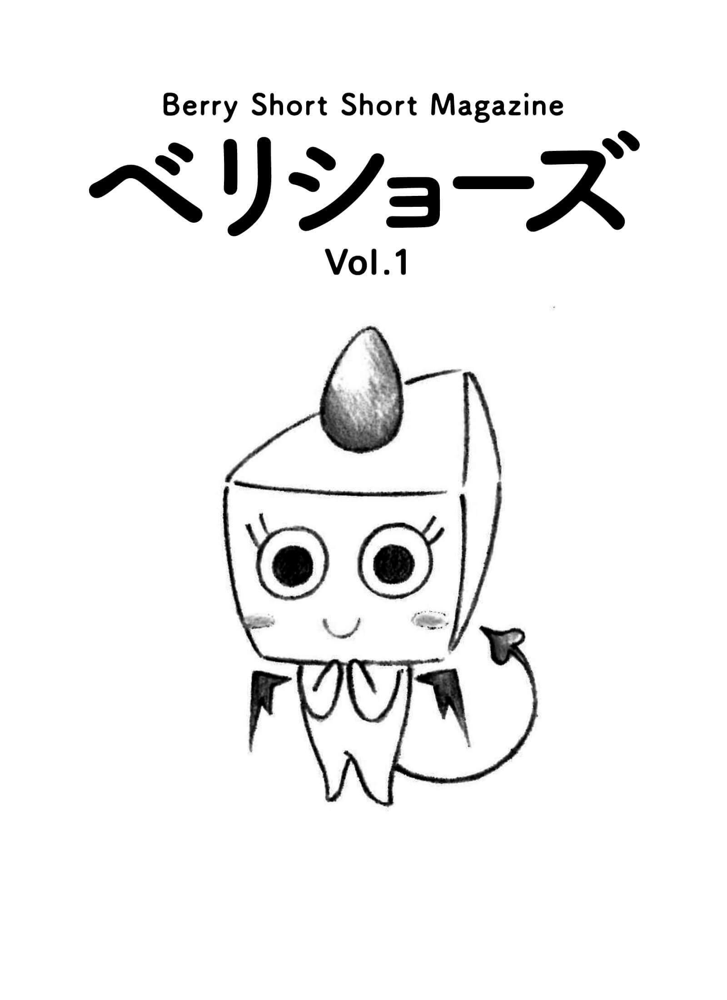
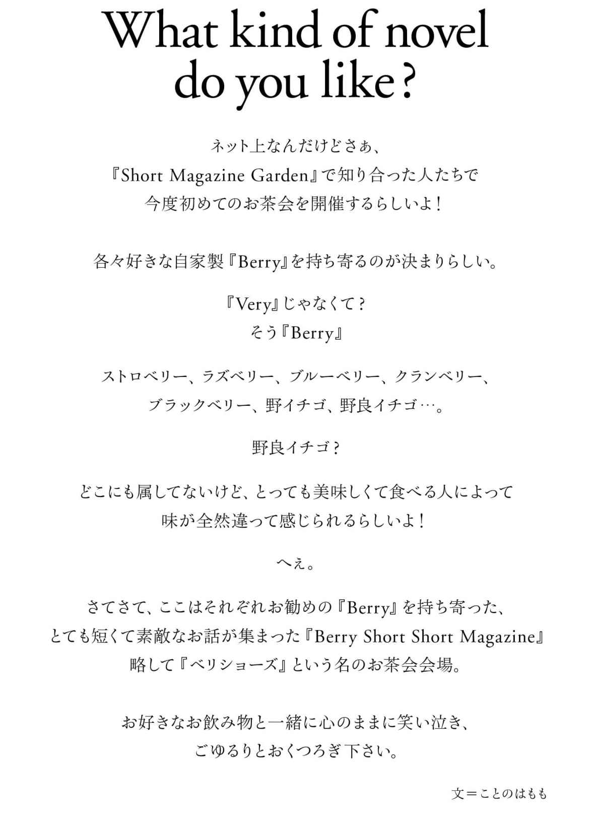
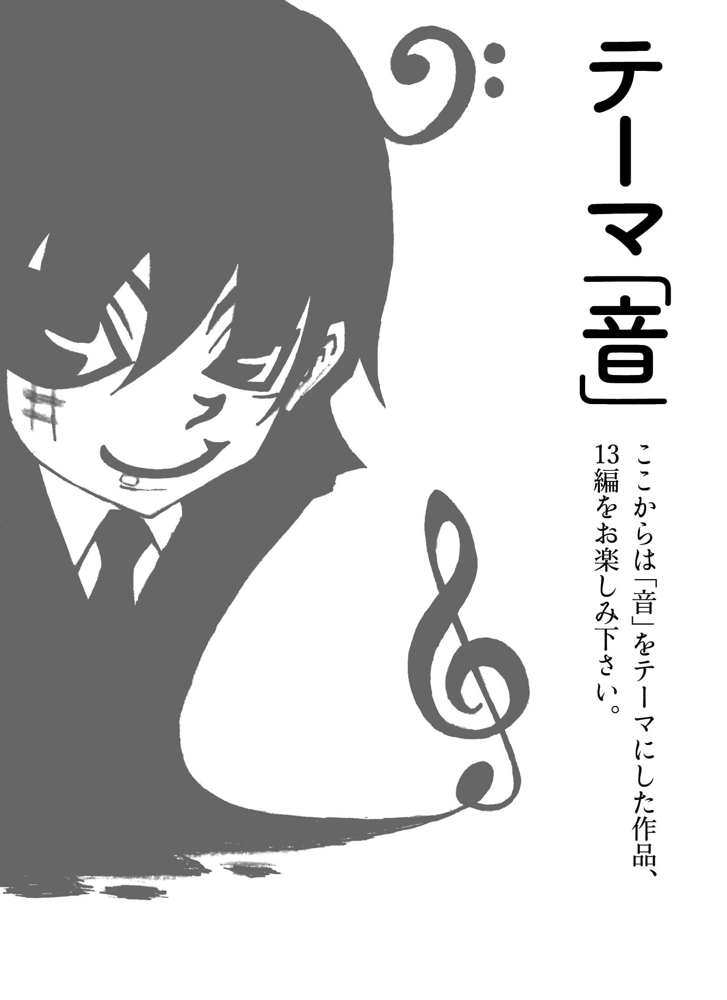
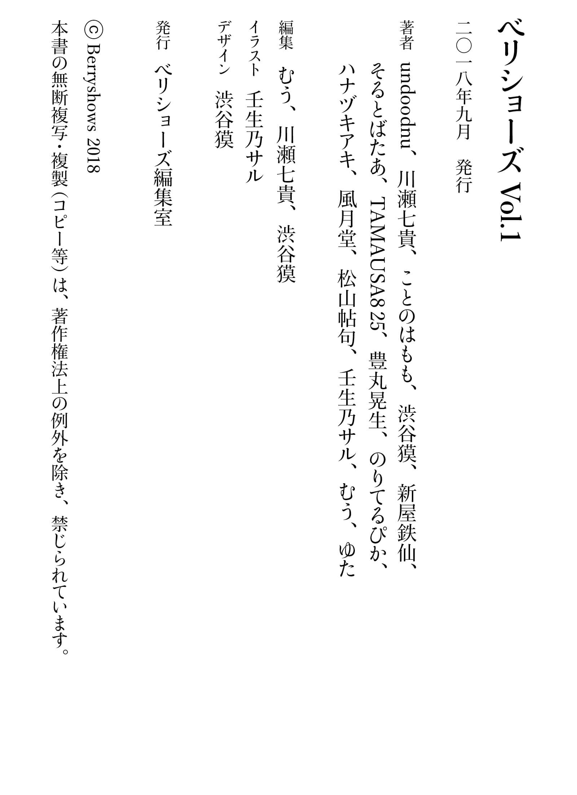

| ベリショーズ Vol.1: ベリーショートショートマガジン (ベリショーズ編集室) | |
| undoodnu 川瀬七貴 ことのはもも 渋谷獏 新屋鉄仙 & そるとばたあ TAMAUSA825 豊丸晃生 のりてるぴか ハナヅキアキ & 風月堂 松山帖句 壬生乃サル むう ゆた | |
| Berryshows (2018) | |

What kind of novel do you like?
知らない町に越す───────────TAMAUSA825
※本書は、前半を「自由」テーマの小説20
編、後半を「音」テーマの小説13
編で構成しています。

一年間同棲した彼女に振られた。
一年間過ごしたこの街にも別れを告げる。
別れの原因はなんてことないぼくの一言だった。
ぼくにとってはなんてことなくても、彼女にしてみたらなんてことなくはなかったらしい。
そもそも最近、小さな揉め事が増え、笑顔も口数も減っていた。
もう潮時だってことはなんとなくわかっていた。
大学卒業後もだらだらと続けていたアルバイトを辞めて何の思い入れもないこの街から離れ、心機一転、全くの知らない町で就職することに決めた。
朝一番で一言も口をきかないまま荷物をまとめ、内見もせずに決めた住所に荷物を送る。
幸い家財などは全て彼女のものであったので、いくつかのダンボールを宅配便で送っただけで殆ど身一つだ。
荷物の到着は明日の午後になるらしい。
飛び出した街は青空の土曜日。
暖かな空気に誘われ、気の向くままに歩き出す。
ベビーカーを押す夫婦、昼間から酒を飲み碁を打つ初老の男性達。
サンドイッチ屋の看板はいちごサンドの売り切れを告げていた。
ふと、華やかな香りが鼻腔をくすぐり、ぼくは公園へと足を向けた。
花壇には、薔薇や金魚草など、たくさんの色鮮やかな花が咲き乱れている。
噴水では子供達がはしゃぎ、ベンチには日焼けに励む中年男性が横たわる。
ぼくは公園を通過し、深呼吸と咳払いを一つずつすると、大きな橋を渡り始めた。
春、暖かい日。
鮮やかな五月色の風が、良く知る街を知らない街に変える。
ぼくは、此処から知らない町に越す。
降りしきる雨。
暗雲立ち込める空に雷鳴が轟き、立ちはだかる灰色の城を漆黒のシルエットへと変える。
私は流行りの服にはあまり興味が無く、服はポロシャツかティーシャツにアデ○ダスのスウェット、靴はナ○キと決めている。
だからといって別に困ることもなかった。
私も友人も普段は部活で帰りが遅くなる上、休日に賑やかな場所に行くときも制服でよかった。
事件が起きたのは高校三年生の夏だった。
私に初めての彼氏ができた。
話せば長くなる上、突然のことで自分でも何が何だか分からないが、とにかく彼氏ができたのだ。
遊園地での初デートが決まってからの数時間は嬉しくて嬉しくて、まるで世界中全ての色の彩度が上がったように感じたのだった。
しかし、ここで問題が発生した。
着て行く服が無いのだ。
前述の通り、私はスポーツブランドばかり着ているのだが、決して面倒で着ているのではなく、機能性やデザインが大好きで着ている。よって、スポーツウェアこそ至高だと考えているのだ。
しかしデートではどうかというと、答えは明確である。
私の彼は筋肉質で、シンプルなタンクトップやスウェットが良く似合う男前。なのでそれで遊園地を歩いても何ら違和感は無いだろう。
むしろそうして欲しいくらいだ。
しかし私はそうではない。
私が二時間近く悩んでいると、彼からメッセージが届いていた。
デートに着て行く服が無い。明日部活帰りに一緒に選んで欲しい。とのことだ。
二秒で行くと即答し、私の服も彼に選んでもらうことにした。
苦手な繁華街での買い物も、彼となら楽しみになるものだ。
二人して大荷物を背負って繁華街を歩く。
私も彼も部活のジャージのまま、あらゆる服屋や百貨店に入る。
しかし、やはりお互いにしっくり来る服が無い。
もう閉店まで時間も無く、それでも気にいる服がなかったので、私は彼に正直に、タンクトップ姿が好きである事を打ち明けた。
彼は少し驚いた様子で、けれど嬉しそうに、彼も私のスポーツウェア姿が好きであることを伝えてくれた。
結局お互いに何も買わずに百貨店を出ようとしたその瞬間。
稲妻が光り、土砂降りの夕立ちが百貨店を包んだ。
不意の足止めを食らった私達は、雨脚が弱まるまで店内をぶらつくことにした。
ふと入ったアクセサリーショップに、美しい宝石の入ったイヤリングが置いてあった。
隣にいる彼を見ると、彼も同じイヤリングが気になっている様子だった。
ピアスは校則で禁止されているが、イヤリングなら大丈夫だろう。
夏休みのちょっとした冒険のように、少しどきどきしながらそのイヤリングを買うと、一人一つずつ分け合った。
安物だが、初めての彼との揃いの品だ。
窓の外は変わらず降りしきる雨。
暗雲立ち込める空に雷鳴が轟き、立ちはだかる灰色の城を漆黒のシルエットへと変える。
彼と私の右耳には、雨粒と雷の輝きにも似た、揃いのイヤリングが誇らしげに輝いていた。
深夜二時。
月光だけが海と防風林を照らす。
ぼくは海沿いの国道に車を停め、缶コーヒーと煙草を嗜みながら、波と木々の二重奏に聴き入っていた。
眼を開けていても閉じていても然程変わらない暗闇が心地良い。
星が綺麗だ。
そうしていると、銀色のバスがぼくの横を通過し、目の前で停車した。
運転席からは上品なシルバーのスーツに深紅のハットを被った老紳士が現れ、ぼくと同じようにコーヒーを飲みながら煙草と景色を嗜み始めた。
はじめは不審に思ったぼくも、老紳士がぼくと同じ嗜好であったことにすっかりうれしくなって、老紳士に挨拶をした。
「こんばんは。美しい夜ですね」
「おや、これは驚いた。こんばんは」
それ以上は特に話をすることも無く、お互い無言のまま夜を楽しんだ。
やがて老紳士が口を開いた。
「おまえさん、海は好きかい？」
「ええ、大好きですよ。暗い海を見ていると心が落ち着くんです」
「そうかそうか。それは嬉しいねえ」
老紳士は微笑みながら大きく頷くと、おもむろに懐中時計を取り出し、ぼくに見せながらこう言った。
「ここで出会ったのも何かの縁だ。良いものを見せてやろう」
老紳士は懐中時計の端を咥えたかと思うと、まるで風船のように膨らませ始めた。
そして、子供のようににやりと笑うと、懐から万年筆を取り出した。
「ちょっと待って！」
止める間もなく老紳士は万年筆を懐中時計に突き刺し、破裂させた。
その瞬間。
頭上には青く透き通った時計が伸びたり縮んだりしながら無数に広がり、足元には甘い香りのする白い花が咲き乱れた。
空中には桃色のウツボが駆け回り、イルカの声が鮮やかに乱反射した。
砂浜では虹色の服を着たウミウシの夫婦がジャズを踊り、シルクハットを被ったタカアシガニはバリトンを響かせた。
赤と黒の鯛がマリンバを奏でれば、金色の昆布がピアノを弾き始めた。
ラムネ色の世界が無限に広がっていく。
「さあ、そろそろ時間だ。あまり長居してはいけないよ」
老紳士の声が響いたかと思うと、鮮やかな景色は一瞬にして消え、ぼくは再び国道沿いに立っていた。
「どうだったかね。素敵だったろう」
「ええ、とても！ 今のは？」
「ははは、何だったんだろうね。夢でも見ていたんじゃないかな。またあの景色を見たいだなんて、決して思ってはいけないよ」
「どうして？ すごく綺麗だったのに。一瞬じゃなくて、もっと見せて欲しかったな」
「どうしてかって？ ご覧。朝日だ」
老紳士に促されるまま海を見ると、なるほど、いつの間にか空が紫色に染まるところであった。
振り返ると老紳士とバスの姿は無く、ぼくの右手には海のように青い小さな箱が握られていた。
中身が気になりはしたが、開けないほうがいいということは、なんとなくわかった。
今日も自称魔法使いのパパは、朝ごはんができるまでの数十分、ぼくのための魔法ショーを開く。
けれど十歳を過ぎたぼくは、パパの魔法が下手なマジックだってことをとっくに知っていた。それでもパパの魔法ショーに、毎朝ぼくは知らないふりで付き合う。
トランプを当てる魔法は、パパがじっと見ていたカードの下に。コインが移動する魔法は、振り上げてもぞりと動かすコップの中に。
どれも種はみえみえだけど、不思議と退屈じゃないこの時間がぼくは好きだった。
最後の魔法が終わると、できたての朝ごはんがいつの間にかテーブルいっぱいに並んでいた。
フレンチトーストにサラダ、ウィンナーにコンソメスープ。デザートのぶどう。
魔法ショーの間に用意されたごはんを、パパと二人向かい合って食べる。
「あ、牛乳忘れてたな」
呟いて、指をくるくると回すパパを眺めながら、ぼくはいつのまにか注がれていた牛乳をごくりと飲んだ。
私は黒猫。
女のご主人様に一年ほど前にこの家に連れてこられて、毎日癒しと温もりを与えています。
でもご主人様ったら一人暮しなのをいいことに帰宅したら服はぬぎっぱなし、胡座をかいて食事をし、休日には下着だけで一日過ごし、お腹やお尻を思いっきりボリボリ。
別にいいんですよ！
私しか同居猫はいないんですから。
でもですね、私はこういう一瞬を決して忘れたくないんですよ。
ですのでご主人様の隙をついてその瞬間の写真を撮るのです。
ええ、人間はまだ気がついてないんですけどね、実は私たち猫族は目に焼き付けたものを写真に撮れる能力を持っているのです。
やり方は簡単。
顔を洗っているフリをして髭を軽く引っ張るとシャッターが押せる仕組みなんです。
撮った写真は直ぐにシッポを振って『猫ネット』へ送信！
するとそこに保管されるので、ご主人様が留守の時にそこからより面白い写真を選択してにゃんスタグラムにアップ♪
そこには人間の醜い写真が沢山集まっていて、一度アップすると直ぐに『いいにゃ！』が１０００を超えるんですよ。
とっても笑えてストレス解消になるので、今一番の趣味ですねぇ。
「さっきの、めちゃくちゃ怖かったんだけど！」
観覧車の中。四分の一ほど過ぎたところで、彼女が彼の膝の上に向かい合うように座っていた。彼もその行為を嫌がる事なく、彼女の腰に腕を回している。
二人は遊園地デート中。観覧車に乗る前に、怖さが尋常じゃない事で話題となっていたお化け屋敷へ行っていた。
「ねぇ、怖くなかった？」
「んー。あんなもんじゃないの？」
「なんでそんな冷めてんのよ？」
彼女は唇を突き出し「むぅっ」と拗ねている。そんな彼女をジッと見つめていた彼は、フッと目線を反らした。
「ちょっと。目、反らさないでよ」
「景色、見ろよ。もうすぐてっぺんだぞ」
「残念ながら私ってあんまりそういうの興味ないの。それよりも......」
そう言いながら彼女が彼の膝を跨ぐように膝立ちした。
「チューが良い」
「は？」
眉間にシワを寄せている彼にお構いなく、チュッと唇を付ける。
「唇、カサついてるよ？」
「ん」
彼女の言葉に彼が唇を舐めた。
「やっぱり怖かったんでしょー？」
「んなワケねぇだろ」
「じゃあ、アレだ。今のこの状況にドキドキしてる、とか？」
「しねぇよ」
「またまたぁ」
悪戯げに笑みを浮かべながら彼女がポケットからリップクリームを取り出した。そして、彼の唇に塗り付ける。
「リップケアしなきゃ。特にデートの時はね。そんなカサカサした唇じゃ女の子にモテないですよー」
「ふん。てか、そのリップ甘くね？」
「うん。これ、ピーチ味だもん」
「ピーチ？」
「ピーチ知らないの？ 桃よ、桃」
「知ってるっつーの。なんでリップに味が付いてんだよ？」
「うーん......甘い演出をするため、かな？ 面白いでしょ？ 思わずキスしたくなっちゃわない？」
そう言うと彼女が再度、彼の唇に口付けた。
「甘すぎる。ピーチはないわー」
「知ってる？ 百って漢字は『もも』とも読むんだよ」
「だから何？」
「ピーチ味はね、百鬼を祓うの」
「百鬼？」
「ヘンな女が寄り付かないように、ね」
「関係ねぇだろ、それ」
そんな事をしているうちに観覧車はてっぺんを過ぎようとしていた。彼女の腰に回している彼の腕に力が込められる。
二人は無言で強く抱き合うと、三度目のキスは濃厚に......。
もはや百鬼が付け入る隙も、ない。
シャリシャリ、シャリシャリ。
真夜中。ベッドに寝転がりながら漫画を読んでいると、突然そういう音が聞こえてきた。どことなく聞き覚えのある音。何の音なのか思い出せない。
耳をすます。どうやら音は机の上からしているようだ。机の上に何かいるのか？ と思うも、面倒臭がりの僕は「まぁ、いいや」と気にしない事にした。
シャリシャリ、シャリシャリ。
漫画を読み終えた。音の止む気配はない。さすがに気になってきた。ちょっと確認してみるか、とベッドから起き上がり机の上をソーっと覗いてみた。
そこには消しゴムくらいの小さな女の子が、いた。
鉛筆にちょこんと跨り、鉛筆の先を削っている。呆気に取られていると、その子がジロリとこちらを見た。
「なんやコラ！ 覗くな言うてたやろ？ こっち見んなや！ 恥ずかしいやんけ！ スケベな目ぇしよってからに。鉛筆の先で目ぇ潰したろか？」
その子はただでさえクリクリした瞳をさらに見開いている。ぷっくりした頬と体型が可愛らしい。が、口が悪い。めちゃくちゃ悪い。というか、覗くなと言われた覚えはない。そもそも勝手に人の家に上がり込んで鉛筆を削っているのはそっちじゃないか。
「何してんの？」
ごく自然に話しかけてしまった。真夜中という事もあってか、この子の存在そのものは受け入れてしまっているらしい。幽霊なのか、妖精なのか、何なのかは知らないけど。
「見てわからんか？ 鉛筆削っとんのや。なんや、あんたも削りたいんか？ あかんで、この鉛筆はうちのやさかいな」
あ、うん。ごもっともだ。でも、その鉛筆は僕のだし。
「どや？ 上手いやろ？ 削りカスが細かいのがミソなんや。匠の技っちゅーやつやな。ここまでなるのに数年は掛かるねんで」
そういうものなのか。確かにこの子は喋りながらも、シャリシャリと器用に鉛筆を削り続けている。机にどんどん溜まっていく削りカス。それを見つめながらシャリシャリという音を聴いていると、強い眠気に襲われた。催眠効果でもあるのだろうか。
「いつまで起きとんねん。はよ寝ぇ。せや。スケベな顔して覗いとったバツ、しっかり与えといたるから覚悟しときやー」
さらりと恐ろしい事を言われたような気がするが、この子が幽霊の類いだとしても大きな害はなさそうだ。放っておこう。もう目を開けていられない。
僕はそのままコテンと眠りについた。シャリシャリという音は夢の中までハッキリと、僕の耳に響き続けていた。
朝。鼻に息苦しさと痛みを感じ、目を覚ました。どうやら机に頭を乗せたまま寝ていたらしい。机には、まるでかき氷のように盛られた細やかな削りカス。その上にはイチゴシロップのような......。
血？
僕はハッとした。なるほど、鼻が痛い理由はこれか。これは、おそらく僕の鼻血。あの子が最後に言っていたバツを受けていたのだ。そう、僕は鼻の穴に......。
先の尖った鉛筆を突っ込まれて、いた。
【マスクの女】
「ねぇ遊び行こうよ」
男が、マスクをした美女に声をかけた。すると、女はマスクをそっと外した。
「私、きれい？」
「うわーーっ！」
口裂け女だった。
「誰にも言うんじゃないよ」
「はい！ 口が裂けても言いません！ あ」
【自分史】
友人に勧められ自分史を書くことにした。
書き出すとハマってしまい、文庫本くらいの厚さになった。
さっそく読み返してみる。
うんうん、そうだったよなぁ......。
厚さのわりに薄っぺらい人生だった。ショートショートで丁度よかった。
【諭す人】
海岸沿いの道を歩いていると、流木に腰掛け、背を向けた男が、ぶつぶつと目の前の誰かに諭している。耳を傾けてみた。
「いいか、人生というものは、前向きに、歩いていくんだぞ」
しばらくすると、流木の陰から、カニが横歩きで通り過ぎていった。
【謝罪会見】
記者「カラ出張で経費を水増したお金で、温泉に行ったというのは本当ですかっ！」
議員「はい！ 大変申しわけ有馬温泉！」
【陽気な救急車】
「ピ〜ポ〜パ〜ポ〜、パ〜ティ〜ピ〜ポ〜♪
」
【恋愛相談】
女は、親友に恋の悩みを打ち明けた。
「彼、まだ手も握ってくれないの」
「ええっ！ 寿司職人なのにぃ！」
【手作り自慢の店】
大家族が営む、総菜屋さんがあった。
店主の子供たちが、助け合って手伝っていた。
偉いなぁ、と感心して店を出ると、店頭の貼り紙に、イタズラがしてあるのを見つけた。
「当店は手作り自慢」の「手」にバツ。その横に「子」と書かれていた。
【超能力】
テレビで超能力者が、スプーンを念力で曲げていた。
「すごい！」
よし自分もやってみよう！ と挑戦してみた。
一向に曲がらない。
一分であきらめた。
自分の意志はすぐ曲がる。
【転職】
「おまえ、稼いでるらしいな、転職したんだって？」
「ああ、泥棒にな」
【ちゃんこ屋】
ちゃんこ屋に小太りの女がやってきた。
「いらっしゃいませぇい！ お太りさまで？」
「はい、お太りよ」
「はぁい！ お太りさま！
相撲部屋にご案内ぁい！」
【占い】
ある男が水晶占いの館にやってきた。
「将来が不安で。占っていただけますか」
「はい。では、この水晶で見てみましょう」
女の占い師は、水晶をなでると、何かが見えてきたようだ。
「可愛いワンちゃんを飼っていらっしゃる？」
「はい！ それウチのトイプードルです！ すごい」
「ん？ この寝転がってるのは、トドかしら？」
「それ、ウチの妻です。たぶん」
【相談室】
その男は失恋し、街を歩いていると「無人失恋相談室」という看板を見つけた。
男は、その扉を開け中に入った。
席に座ると、目の前に大きな鏡があった。
「なるほど、やっぱり顔」
【関西のスパイ】
ある組織に関西のスパイがいるとの情報が入った。
「この中に、関西のスパイがいる！ おまえかっ！」
Ａ「いえ私ではありません！」
「おまえかっ！」
Ｂ「とんでもございません！」
「おまえかっ！」
Ｃ「なんでやねん！」
「おまえだぁーーっ‼
」
ある日、コウモリが森の中を飛んでいると、洞穴の入口で泣いているウサギを見つけました。
「どうしたの？」
声を掛けるとウサギが顔を上げました。
「パパとママが帰ってこないの」
ウサギの両親は餌を探しに出かけたまま三日も帰ってきませんでした。ウサギは怖くて動くことが出来ず、体は痩せ細っていました。
「僕が食べ物を取ってきてあげるよ」
コウモリは森を飛び回り、美味しそうな野菜や木の実を集めました。
「ありがとう」
「ウサギさん、僕と友達になってよ」
コウモリの言葉にウサギはびっくりしました。
「あなた血を吸うんでしょ。私の血も吸いたいんでしょ？」
そうです。ナミチスイコウモリは動物の血が大好きなのです。
「す、吸わないよ！ 僕はウサギさんに元気になってほしいんだ！」
本当は、美味しそうだなって少しだけ思ったけど。
次の日も、その次の日も、コウモリはウサギに食べ物を届けました。
「今日は花を持ってきたんだ」
コウモリが集めた花を空に放り投げると、沢山の花びらがひらひらと舞いました。
「きれい...」
「池のそばに咲いてた」
「池？」
「知らない？ 山の手前にある池だよ」
舞い落ちる花を見つめて、ウサギは少しだけ笑顔になりました。
それからコウモリは色々な物をウサギに届けました。今日は西の丘に。明日は東の草原に。コウモリが見た景色や出会った動物の話を聞いて、ウサギはよく笑うようになりました。
そんな毎日が続いたある日のこと。
「私、旅に出るわ」
ウサギがコウモリに言いました。
「旅に出て、コウモリくんみたいに色んな世界を知りたいの」
「僕も一緒に行くよ」
「ごめんなさい。これは私の旅だから。コウモリくんとは一緒に行けない」
がっかりするコウモリを見て、ウサギは優しく微笑みました。
「私の血、吸う？ 吸ってもいいよ。お礼に」
「す、吸わないよ！」
本当は、とっても吸いたかったけど。
どんな味なんだろうと何度も想像したけど。
でも、友達を傷つけることはしたくない。
「いいの？」
コウモリは自分に言い聞かせるように大きく頷きました。
「わかった。コウモリくん、私と友達になってくれてありがとう」
旅立つウサギの姿が見えなくなるまでコウモリは手を振りました。
元気でね。
またいつか会おうね。
僕、小森翔助は彼女の大粒の涙を見た瞬間、恋に落ちていた。
彼女は上司に連れられて入った夜の店で働いていた。華奢でスタイルがよく、大きな瞳と柔らかそうな唇が印象的だった。その日は月に一度のバニーの日（？）だったらしく、ウサミミのカチューシャが彼女によく似合っていた。隣に座った彼女と何故そんな話になったのか、僕が母親の話をしている時、急に彼女が泣き出したのだった。
「ごめんなさい。フィリピンにいる母の事を思い出して...」
彼女は日本人の父とフィリピン人の母を持つハーフだった。一ヶ月程前に父が事故で亡くなり、体の弱い母と兄弟の生活費を稼ぐため日本で働き始めたらしい。
「僕に何か出来ることはない？」
彼女は驚いた顔で僕を見て、すぐに視線を逸らした。
「どうせ私の体が目当てなんでしょ。日本人ってみんなそう。私とエッチしたいんでしょ？」
「ち、違うよ。君の力になりたいんだ！」
「...じゃあ...」
次の日、彼女の出勤前に僕達は駅前の大型電器店で待ち合わせた。「一緒に電子レンジを選んで欲しい」と言う彼女に付き合うためだ。二人で手頃な電子レンジを選んで、彼女が配達先の住所を記入している隙に僕は会計を済ませた。
「ありがとう。日本に来て初めてプレゼント貰っちゃった」
「え、レンジなんかでごめん」
彼女は首を横に振って「嬉しい」と言った。
「初めてのプレゼントと初めてのデートが小森さんで嬉しい」
そうか、これはデートなのか。彼女はそう思ってくれていたのか。
彼女は上目使いで僕を見た。
「初めての同伴もいい？」
「もちろん」
「ありがと♪
」
それから彼女は何かを思い出したかのように「あっ」と声を上げた。
「お店のトイレに忘れ物しちゃった。小森さん、ちょっと待ってて」
店に急ぎ足で戻る彼女の後ろ姿が眩しかった。見慣れた駅前の風景が色鮮やかに見えた。こんな気持ちは初めてだった。
次の日も、その次の日も、僕は彼女の店を訪ねた。
「今日は花を持ってきたんだ」
「いい匂い...」
「池袋駅前で売ってた」
「池袋？」
「知らない？ 山の手線の少し先の駅だよ」
電子レンジの使い心地を聞いた時、彼女の表情が曇った。お店の女の子にその話をしたら「ブランド品を買ってもらいなよ」と馬鹿にされたそうだ。彼女は「そんなのいらない」と言ったけど、僕は彼女が店で肩身の狭い思いをするのは嫌だった。
次の日、僕は人気のブランドバックを調べて購入し、彼女にプレゼントした。彼女はとても喜んでくれた。高い買い物だったけど、買ってよかった。
「他に欲しい物ある？」
彼女の瞳がキラキラと輝いた。
「洗濯機！」
庶民的な彼女の答えが面白くて僕は爆笑した。そんな僕を見て、彼女も笑った。
「今の洗濯機、中古で音が凄いの。ゴトゴトゴト、ドカーンって」
彼女が脱水している洗濯槽のように声に合わせて体を震わせた。その仕草がたまらなく可愛かった。柔らかそうに揺れる彼女の胸に僕は視線を泳がせた。
「そんなに？」
「そうなの。ゴトゴトゴト、ドカーン！」
弾むように彼女が僕の胸に飛び込んできた。僕は彼女の小さな肩を両手で掴んだ。彼女の髪の香りが鼻をくすぐった。至近距離で目を合わせて、僕達は笑いあった。
帰り際、店のボーイに声をかけられた。整ったヒゲをした若い男だった。
「いつもありがとうございます」
僕は黙って会釈した。
「あの人のあんな楽しそうな顔、初めて見ました。きっと小森さんは、あの人の特別なんですね」
...お世辞だとしても悪い気はしなかった。
数日後、彼女に洗濯機をプレゼントした。その後も、イベントや記念日には彼女が貰って恥ずかしくない物を選んで贈った。
彼女の誕生日。公園で待ち合わせた彼女に僕は指輪をプレゼントした。彼女は嬉しそうに指輪を手に取り、ダイヤの輝きを確かめるように色んな角度から指輪を眺めた後、左手の薬指に通した。
「ありがとう、小森さん。大切にする」
「うん。それで、あの...」
「あのね、小森さんっ」
いつになく思い詰めた彼女の表情に、僕はプロポーズの言葉を飲み込んだ。
「母が病気なの。フィリピンに帰るわ」
「僕も一緒に行くよ」
「小森さんは仕事があるでしょ。落ち着いたら戻ってくるから。待ってて」
彼女は恥ずかしそうに微笑んだ。
「エッチする？ してもいいよ。お世話になったお礼に」
本当は今すぐにでも彼女を抱きしめたい。キスしたい。もっと色々したい。でも、お世話したお礼じゃ嫌だ。そんなんじゃ嫌なんだ。
「戻ってくるまで待つよ」
「いいの？」
僕は自分に言い聞かせるように大きく頷いた。
彼女はふわりと僕に近づいて頬にキスした。思わず抱きしめようとした僕の腕をスルリと身をかわして彼女は僕から離れた。
「バイバイ」
立ち去る彼女の姿が見えなくなるまで僕は手を振った。
元気でね。
いつまでも待ってるから。
公園の近くの道路に車が停まっていた。女は無言で助手席に乗り込むと、左手の指輪を外した。運転席の男がそれを見て口笛を吹いた。
「高そうだね。刻印は？」
「入ってないのは確認済みよ」
「よかった。イニシャル入ってると高く売れないからね。いつも通りオークションでいい？」
「任せるわ」
「電化製品はキャンセルして返金、プレゼントはオークション、おまけにフィリピンに母親はいないし病気でもない。流石だね」
「まあね。少しは嫉妬した？」
「......少しね」
女はクスリと笑って、ヒゲの整った男に唇を寄せた。
「私の特別は、あなただけよ...」
突然だが、私は超能力を使うことができる。私が超能力を習得していく中で一番重要となったのは、イメージの力だった。
例えば、私は空中浮遊を行うことができる。まず、足の裏に神経を集中。地面との摩擦をゼロにするイメージ。これを行うと、靴の中で足が宙を浮く。外から見ても分からないが、たしかに浮いているのだ。大事なのはイメージ。それを私は実現できる。ただし、この能力には制約があり、靴を履いていないと行えない。私が空中浮遊の習得時に靴を履いていたからだ。大事なのはイメージ。一度付いた癖は、なかなか取り除けない。
私は他の超能力を使うこともできる。テレポーテーションだ。私のテレポーテーションは、文字通り、物体をある場所から別の場所へと移動することができる超能力だ。私がこの超能力を発動するためには、食事をする必要がある。簡単に説明すると、私が何か食物を口にする。すると、その食物は口から食道へ行き、胃まで移動する。ここまでは普通だ。私の超能力はここで発動することができる。胃にある食物を小腸へと移動することができるのだ。小腸を細かく分けると、十二指腸や他の腸に分類できるが、私の超能力には関係ない。大事なのはイメージ。胃から小腸へ食物が移動されるのだ。通常の消化と近いものがあるかもしれないが、たしかに移動しているのだ。この能力には制限がある。最初にも説明したように、食事をしていないと行えない。私がテレポーテーションの習得時に食事をしていたからだ。大事なのはイメージ。一度付いた癖は、なかなか取り除けない。
イメージの得意な私は、他の超能力も持ち合わせている。それは、物質変換だ。ある物質を別の物質に変換することができる。私がこの超能力を発動するためには、両替機に千円札を入れる必要がある。私が両替機に千円札を入れ、能力を発動する。すると、両替機の内部で千円札が分解され、百円玉十枚に変換される。ここで、無意識化にテレポーテーションの能力も組み合わせて発動され、分解され変換された千円札は内部の機械を通ることなく、硬貨取り出し口に移動するのだ。つまり、二つの超能力を組み合わせた高等な超能力といえよう。見た目は普通に両替を行っているのと変わりはないが、たしかに物質変換を行っているのだ。この能力には制限がある。千円札を百円玉十枚に変換することのできる両替機が必要だ。両替機を使用した場合においてのみ、物質変換を行うことができる。私が物質変換の習得時に両替をしていたからだ。大事なのはイメージ。一度付いた癖は、なかなか取り除けない。また、両替用の百円玉が切れていたり、両替機の電源が入っていない場合も、物質変換を行うことはできない。両替のイメージができないからだ。それほど、超能力はイメージの力に密接に絡み合っている。
このように、私は様々な超能力を使うことができる。だが、他人に超能力者だとばれたことは一度もない。超能力を見せびらかすようなことはしていないが、特に気を付けて隠すようなこともしていない。ある意味、超能力が他人にばれない、これが一番の超能力かもしれない。イメージの力をも超えている。これだけは、どうやって習得したのか私にもわからない。
島田さんとは同じクラスで、隣の席の女の子。この学校に入学してから、初めて出会った。休み時間とかは普段よく喋るし、仲も良いと思う。放課後ちょっと残って、一緒に話すこともある。
ややクールめな女の子。でも、たまにスイッチが入ると熱くなる気がする。髪の毛はサラサラのタイプ、二つに縛ってお下げにしている。目鼻立ちは整っていると思う。ちょっと鋭めの目に、少しの威圧感を感じる時もあるけれど、上目遣いで見られると、ドキッとしてしまう。
そんな島田さんに対して、僕としてはちょっかいを出してからかっているつもりなんだけれども、島田さんはどこ吹く風。気が付くと島田さんのペースに乗せられている。
今日の放課後だった。島田さんが、
「この映画見た？」
と、映画のＤＶＤのパッケージを見せてくれた。５年くらい前に流行ったシリーズものの映画の第一作だ。僕は見たことがなかった。
「見ていないよ」
「見たい？」
「うーん、どうかな？」
「見たいでしょ？」
「えー、そんなに面白いの？」
「どうかなー？ 見たい？」
「そこまで言うなら、見たくなってきたよ」
「よしっ！」
島田さんは軽くガッツポーズをした。島田さんは僕にＤＶＤを差し出してくれたので、受け取った。
「見てね！ すぐ見てね！ 必ずだよ！」
「うん、分かった。楽しみにしているよ」
「じゃあね、必ず見てね。また明日。バイバイ～」
島田さんは笑顔で手を振る。僕も手を振り返した。島田さんの笑顔に僕の心が少し温かくなったような気がした。
次の日。僕は昨日の内にＤＶＤで映画を見ていた。まあ、面白かった。アクションシーンも格好良かった。だが、次回作も見たいかと言われると、疑問符が浮かぶ。同じことの繰り返しになるような気がしたからだ。島田さんには悪いが、第二作を貸してくれると言っても、断ることにしよう。
朝、ホームルームの前に、島田さんにＤＶＤを返して、お礼を言うことにした。
「ありがとう、島田さん。とっても面白かったよ。なんだよー素直に薦めてくれればいいじゃんか」
「私、面白いって言わなかったっけ？ じゃあ、次も貸してあげようか？」
「え、うーん、あのう......」
「どうしたの？」
「えーとですね、その。お気持ちはありがたいのですが......」
「続きは興味ないんだね」
島田さんが悲しそうな顔をした。
「いやいや、別にそういうわけではないよ」
「私も、続き持っていないんだよね！」
島田さんはイタズラな笑顔で答えた。
「なーんだ、島田さんも持っていないの？」
「ふふふ。じゃあさ、半分ずつお金を出して、一緒に見ようか？」
「え、いいよ、別に。だって、面白くなさそうだもん」
「ふーん」
「だってさー」
「一緒に見たかったな。あ、ホームルーム始まるよ」
島田さんは一瞬、寂しそうな顔をした気がしたが、前を向いている彼女は普段と何も変わっていなかった。
僕はあいつが嫌いだった。二年先に生まれたってだけで偉そうだし、何でも新品を買って貰えるし、お喋りで調子が良くて、いつもヘラヘラしてる。
だけど僕はある時、あいつと秘密を共有した。イエローマンだ。
「おい、ゆうた、何やってんだよ」
僕は半べそだった。鍵をなくして家に入れなかったからだ。僕の方が時間割りが少なくて早く帰るから、母ちゃんが仕事の日は、僕が鍵を持って家を出ることになっていた。
「鍵、なくした」
「マジ？ 探したのかよ」
「探したけどなかった」
あいつは参ったなぁという顔でしばらく考えるそぶりを見せると、後ろ向きになってランドセルをゴソゴソやり始めた。背中ごしに覗くと、ノートを開いて「おい、ピンチだ、ピンチ」と小声で言ってる。そうしたら、ヒーローみたいな格好した黄色い小さな奴が開いたノートからぴょんと飛び出した。そいつは、僕の顔見て親指を立てて頷くと、ヒューと細くなって吸い込まれるみたいに鍵穴の中に消えていった。僕がびっくりしているとガチャリと鍵が開く音がした。
「開いたよ！」
僕が興奮して叫ぶと、あいつは、へへんとちょっと威張った顔をした。ドアを開けると、玄関に黄色い奴が同じ用にへへんという顔をして立っていた。
「何だよそいつ」
「イエローマンだよ。俺が描いたヒーローだ。ピンチの時に助けてくれるんだ」
そういうと、あいつは算数のノートを開いた。イエローマンはノートに戻るとただのラクガキになったから、僕は思わずノートを手でなぞった。
「すげえ」
「ゆうた、これ誰にも秘密だぞ。男同士の秘密だ」
あいつは嫌いだけど、イエローマンはすごい奴だった。僕らがピンチになると、イエローマンはノートから飛び出てくる。だから僕は、皆にイエローマンを自慢したくなって、こっそり算数のノートを持ち出した。
友達の家で、僕は得意げにノートを取り出した。
「面白いものを見せてやるよ。イエローマン、出てこい」
イエローマンは出てこなかった。何度も呼びかけても出てこなかった。友達は笑い出すし、しまいにはバカみたいと呆れられて、恥ずかしくて腹が立ってたまらなかった。帰り道、ムカムカして、ノートをビリビリに破って捨てた。
家に帰るとあいつが
「あのノート知らない？」
と聞いてきた。
「知らない」
僕は目をそらした。
「ほんとに？」
その時僕は、急にものすごく取り返しのつかないことをした気がして、家を飛び出した。
「おい」
あいつが追いかけてくる声がする。僕は走って、走ってノートを捨てた場所まで走った。バラバラだ。ノートはバラバラだ。僕はバラバラをかき集めてイエローマンを必死で探した。あいつは僕に追い付くと、バラバラのノートと僕を交互に見た。僕は頭と顔がカーッって熱くなった。
「皆に見せたかったんだ。でも出てこなくて、だからなんかムカついて、だから」
なんか大きい塊が胸の中が詰まったみたいになって、喉が苦しくなっていつの間にかワーワー泣いていた。
あいつはバラバラを集めるとしばらく黙って
「イエローマンの任務は完了した。だから俺たちはイエローマンを解放する」
と言った。そうしてバラバラのノートを空に向かって放った。
「イエローマン、ありがとう」
ばらばらが紙吹雪みたいに僕の上に落ちてきて、僕は一瞬ポカンとして、それからあいつにすごく悪いことをしたんだって気が付いた。
「ごめんなさい」
僕は生まれて初めてあいつに謝った。
それで僕たちは、イエローマンにバイバイした。それだけの話だ。
昨夜、小三になる息子のノートに、黄色く塗られたヒーローみたいなおかしな落書きを見つけた。そいつはこっちを見て、一瞬親指を立てて頷いたように見えた。だから、僕は兄さんに急に会いたくなった。
それだけの話だ。
『二四時間後、オムライス解散！ 正午より記者会見』
その日の〇時に解禁された重大ニュースは、瞬く間に列島を駆け抜けた。
朝のワイドショーは全局が特別番組に変更になり、街では号外が配られ、飲食店ではオムライスの注文が殺到し、子供から大人までが涙した。
国民的エッグフードであるオムライスの解散。
この物語はその伝説ともいえる一日の一部始終の記録である。
その知らせは何の前触れもなくやってきた。注文もしていないのに届けられた一枚の紙。
深夜〇時。マスコミ各社に一枚のファックスが送信された。
テレビでは緊急速報が流され、ネットニュースでも拡散された。
テレビ局は騒然としていた。各局が早朝のニュース番組で使う素材の調達へと奔走。卵も情報も鮮度が命だ。
とある局では、専門家たちが緊急招集されて、緊急生特番『朝まで生オムライス』が放送された。食の専門家、グルメレポーター、有名オムライス店店主などオムライスと深い関わりのある有食者たちが集まった。その中でも、オムライス店店主の語った言葉が印象的だった。
「オムライスというのは、私たちが駆け出しの料理人の頃、簡単には作らせてもらえませんでした。それは、やはり卵を包む技術的な部分です。お客様に出せるレベルのものにするまで、お店の閉店後や自宅で練習したことを思い出します。フライパンを揺する、箸でかき混ぜる、火加減、チキンライスを包む技術。初めて、私が作ったオムライスを食べた方の顔は今でも忘れません。技術的な部分はプロですからもちろんのこと、作って終わりではなくて、召し上がるお客様への真心も一緒に包もうと思いました。隠し味ってやつですよ」
さて、ネットニュースで拡散された深夜の街の様子はどうだろうか。ファミレスではオムライスの注文が殺到していた。この時間帯に営業している飲食店が限られていたため、オムライス難民の人々が押し寄せたのだ。上から被せるタイプのオムライスが主流の店だが、ただでさえ深夜帯で従業員が少ない中での大量注文。店側は急遽、オムライス時給でのオムライスシフトを敷き、オムライスオペレーションを実行した。卵がなくなると人々もいなくなった。
早朝、テレビ局はニュースで特集を組んだ。オムライス結成秘話やこれまでの歩み、過去にリリースされたオムライスや時代とともに進化するオムライス特集、世代別好きなオムランキング、様々な報道がなされた。
その頃、街のいたる場所では人だかりができていた。
スーパーでは、開店前から卵を求める人々が行列をなし、混乱をさけるためにお一人様一パックのみでの販売がアナウンスされた。スーパーを梯子する人も多数いた。
金物店にもフライパンを求める人々が集まった。
その中でもオムライス有名店の行列がすごかった。隣町同士の行列がぶつかるという事態も発生した。各店も卵の数には限りがあり、整理券を配布したが、客からの強い要望に店側は卵持参であればオムライスの提供を認めた。これは異例の措置ではあったが、店側の熱い想いの込められた接客だった。
さぁ、街から卵がなくなると大変なのが、卵を産む鶏と関連業者だ。鶏たちも回転を上げるが、消費に追いつかない。その姿を間近で見ている関係者たちも、
「産めるなら俺たちが産んであげたい！」
と話してたのには、食事中の方には申し訳ないが、親心を感じずにはいられなかった。
正午。某ホテルの記者会見場は、異様な雰囲気に包まれていた。
会場内には、何百人という報道陣の数、何十台というテレビカメラ。
ホテルの外には、老若男女問わず大勢のファンが群がり、オムライスのうちわを持ち、「ありがとう」と感謝を伝える人、解散反対のプラカードを掲げて、「馬鹿野郎」と泣きながら訴える人だったりが入り乱れていた。上空にはヘリコプターが何台も飛んでいる。
定刻になると、記者会見場にたまごはん、まい米、ちきん、けちゃっぷの順に登壇した。
たまごはんは、サングラスをかけ、顔にはトレードマークのひび割れペイントが施されている。まい米は、炊きたてのふっくらとした笑顔。ちきんは、鶏皮ジャンを着こなしクールだ。けちゃっぷは、口元にケチャップがついている。
「えー、皆様、お集まりいただきます......いただきましてありがとうございます。本日を持ちまして、我々、オムライスは解散します」
代表してたまごはんが挨拶すると、無数のフラッシュがたかれた。
「えー、本日は、オリジナルメンバーだけの登壇となりましたが、数多くのサポートメンバーやコラボアーティストにも僕たちは支えられてきました。デミ、ベシャメル、カレーやハヤシ、僕たちを彩ってくれたすべての仲間たちにここで感謝を伝えたいと思います。
解散の理由につきましては、一部報道されているような食の方向性の違いということはまったくございません。僕たちは互いにプレーヤーとしても尊敬していますし、仲違いということでもありません。この四品が揃えば、オムライスが浮かぶと思うんです。だからこそ、新しい可能性を探りたいという前向きな決断と捉えていただかれ......いただきたいです。
今後、僕もオムレツとして、この三品もチキンライスとしての活動は継続していきます。僕たちを思い出したくなったときは、お手数ではありますが両方を味わってみてください」
たまごはんは、非常に丁寧に慎重に言葉を選別している印象をうけた。
ここからは質疑応答。
『新しい可能性というのを具体的に教えていただけますか？』
「新しい料理が生まれることです。スタンダードなものとして確立したオムライスですが、また違う形で、初期衝動を感じたいとそう思いました」
『お気持ちはわかるのですが、解散をする必要はないのでは？』
「これまでたくさんの方々に愛されて、ここまで大きくなった料理を終わらせることにはメンバーやスタッフとも何度も話し合いの場を設けました。それでも、僕たちが食べ終わるという選択が若手の料理、つまりまだ見ぬレシピの道を切り開くのではないかという結論にいたりました」
『ファンの方々に一言お願いします』
「そうですね、こんな半熟者の僕たちを愛して、作ってくれて、食してくれて本当にありがとうございました。また、どこかでお会いできることを楽しみにしています」
再び、無数のフラッシュがたかれる。けちゃっぷは、去り際にテレビカメラに赤いハートマークを描いた。
記者会見の終了後、最後の公式オムライス調理イベントが開催された。食事券は即完売し、あぶれた人たちのために各地でパブリックビューイングも開かれた。
料理人は朝オムに出演していた彼だった。
調理が始まった。暗い表情ではなく、楽しんでいるのが伝わってくる。包丁が軽快に刻み、フライパンは体の一部のように動き、肝心の卵も見事な出来栄えだった。最後にケチャップを中央にスプーンでかける。完成した瞬間、会場は静まり返り、まもなく、拍手喝采が巻き起こった。その場にいた著者も涙が止まらなかった。
その夜、各家庭ではオムライスがほとんどだったことだろう。ここ最近、忘れられていたケチャップ文字が、今日は各地でオムライスへの感謝だったり、メッセージであったり、プロポーズのオムライズにまで使われた。
国民的エッグフード、オムライスの解散。
だが、悲観することはない。
いつかきっと、我々がチキンとオムってさえいれば、また味わえる日が来ることだろう。
私は生まれてこの方、海というものを見たことがない。
もちろん、テレビや本でそれを見たことはある。私が見たことがないのはなまの海だ。
お母さんと車で30
分ほど行った町に一軒だけあるスーパーに買い出しに行くと死んだ魚が氷の上に並べられていた。
魚は目が白く濁ってないんを選ぶんよ。その方が美味しいし魚の目玉は食べると目がよくなるけんねと、いつも目玉をしゃぶりつく様に食べるお母さんが言った。
私はあのにゅるっとしたゼリーみたいな食感が嫌いだ。それに私は視力が２・０あるから、別に目がこれ以上良くなる必要がない。
うちの家は愛媛の山奥で民宿「竜宮の家」をやっている。夏休みになるといつも東京とか大阪から家族連れが泊まりにやってくる。子どもの私も布団を敷いたりご飯の用意を手伝うから夏休みなんてないに等しい。
「こんな何もないとこにようおいでたねえ」とお母さんが言うと「何もないとこがいいんですよ」とお客が返す。客たちは座敷の囲炉裏の火の周りに串に刺されて並べられたアマゴや味噌が塗られた野菜、井戸水で冷えた西瓜（そんなものは私らにとって一つも珍しくないのだけど）に嘘みたいな歓声をあげた。
民宿「竜宮の家」はおじいちゃんとおばあちゃんが始めた。
山の中にあるのにその浦島太郎みたいな名前はおかしいと来る人来る人が言った。そんな時おじいちゃんはいつも「その昔、亀に助けられましてなあ」とおどけて見せた。おじいちゃんの部屋には大きな亀の甲羅があった。あったということは今はないということだ。
日本の砂浜に埋まっている卵の中から孵った体長４cm
ほどのウミガメの子どもは海に入り太平洋を渡りメキシコにたどり着き、大人になって、そこからまた海を旅して自分が生まれた日本の浜辺に帰り卵を産むのだとテレビの中の男の人が言った。その距離およそ２万キロ。ここから小学校までが歩いて３キロほどだから、ざっとその７０００回分くらいの距離になる。私はプールで25
ｍすら泳ぐことができない。あのウミガメたちはずっと海の中にいてどうやって休むのだろうかとテレビを見ながら心配していたら、おじいちゃんが海はしょっぱくて、プールの水よりも体が浮きやすいと言った。
理科の実験でゆで卵が水に沈んだけど塩水には浮かんだことを思い出した。
「ねえ、なんで海の水はしょっぱいん？」
私はむきたてのゆで卵みたいな頭をしたおじいちゃんに聞いた。
「さあ、なんでやろなあ。きっと海は昔からあって、そこでたくさんの人が亡くなったんやと思うわ。船が難破したり津波でさらわれたりな。で、そのたんびに悲しくって苦しくって怖くって涙がいっぱいいっぱい流れて海の中に落ちて。そんで今ぐらいしょっぱなってしもたんやろなあ」
そういえば涙の味はしょっぱい。
「ほうなん。海の水って涙でできとんや。ねえ、おじいちゃんはウミガメ見たことあるん？」
おじいちゃんはうんと頷いて、それから昔のことを話してくれた。
おじいちゃんは戦時中、軍艦に乗ってコックの仕事をしていたそうだ。すると敵の魚雷にやられて船が沈み海に投げ出されてしまった。海には鮫がうようよいて、おじいちゃんは鮫のことを鱶と呼んでたけど、真っ暗な夜の海で横に一緒に棒切れに掴まっていた人は足首やふくらはぎを鮫にかじられ、流れ出た血にまたたくさんの鮫が寄って来た。
「おじいちゃんな怖くて怖くて、もうダメやと思って苦し紛れに上を見上げたんよ。ほしたらな、満天の星よ。南十字星が煌々と輝いとってな。ずーっと厨房で料理ばっかりしよったから、まさかそんなに綺麗な星が見えるとは夢にも思わんでな。横で仲間が喰われよんのに、おじいちゃんその星空に見とれてしもてな」
「それでどうなったん？」
「気がついたらもう朝やった」
「すごいなあ、何でおじいちゃんだけ助かったん？」
「さあなあ」おじいちゃんが遠くを見て言った。
「何であいつが喰われてその横におったわしが助かったんかはわからん。それはもうどんなに考えてもわからんかった」
それからおじいちゃんは軍艦から非難した仲間のボートに助けられ何週間も海の上を漂流したそうだ。
「そんなに長い間、海の上で何食べよったん？」
「ん？......ああ、ウミガメのスープよ」
おじいちゃんが少し笑って言った。
時々海の上に浮かんでくるウミガメを獲ってはコックのおじいちゃんが料理していたそうだ。部屋にある甲羅はその時の亀だと笑った。
おじいちゃんが戦争のことを話したのは後にも先にもその一回きりだった。
おじいちゃんは今年に入ってすぐゴエンセイハイエンというので町の病院に入院した。お見舞いに行くとおじいちゃんはいつもうわ言で「すまん、すまん」と誰かに謝っていた。
山奥で民宿を始めたのは戦争中、海で死んだ仲間のことを忘れたかったからなんよとおばあちゃんがボソッと言った。
入院して２週間後おじいちゃんは死んだ。鮫に喰われなかったおじいちゃんも病気と年には勝てなかった。棺には一緒に亀の甲羅をいれた。それが遺言だったから。甲羅はちょうどおじいちゃんの胴体と同じくらいの大きさで、だから甲羅を体の上に置くと、顔の向きは反対だったけど大きな亀みたいに見えた。それを見てみんなは笑いながら泣いてた。
民宿の朝は早い。
と言ってもその日は珍しく泊まり客は女性一人だけで、私はすることがないので、その人と一緒に座って朝ごはんを食べていた。うちの民宿では朝ごはんは何故か鯖焼き定食と決まっていた。
「お手伝いしてるの」
「うん」鯖の焼いたやつを箸でほじくりながら私は頷いた。
「偉いね。あ、やったげる」
お姉さんはお箸をうまく使って鯖の肉から骨だけを綺麗に剥がしてくれた。
「ここは山の魚も海の魚も美味しいね」
うんと頷いた。
「竜宮の家だもんね。ここ」お姉さんがにっこり笑った。
私も笑った。
「そういえばね」
お姉さんは昨日の晩、寝ていると周りの木々の葉っぱが風に揺れて、それがまるで潮騒のようだったと言った。
「潮騒って、何？」初めて聞く言葉だった。
「え？ ううんとね、海の波の音のこと」
「海？」
「そう」
私はその晩、電気を消して布団に入ると、耳を障子の外にそばだてた。
山の潮騒。
それはまるで意思を持っている生き物のように夜の闇の中で蠢いていた。その振り子のように寄せては引くを聴きながら私は目を閉じた。
ザザザ、ザザザザー。
お日様の匂いのする布団に体が沈み込んでゆく。
するりと体が布団から抜け落ちた。私はどこか深いところにゆっくりと落ちてゆく。でも不思議と怖くない。
手が何かあたたかなものに触れた。
目を開けるとそれはおじいちゃんの手だった。手と言っても人間の手じゃなくて亀の手。おじいちゃんは海亀になっていた。
「おじいちゃん、ここは海なの」
海亀は頷くと自分の甲羅を掴むよう言った。
なぜか海亀は泣いていた。
「どうして泣いてるの？」
「わしは死んだ仲間を食った。自分が生きるために」
海亀は私を連れて海の底へ底へと潜ってゆく。
おじいちゃんの涙のせいで海の水がしょっぱい。
潮騒はもう聞こえなかった。
太陽の日差しも月の光も届かない、真っ暗で音のない世界。
キラ。
光のない世界に何かが光った。
キラ。
あの光はなんだろう。
深海魚。違う。星。満天の星。
宇宙に浮かぶ蒼い星の上にある小さな山の民宿の一間でひとりの少女が眠りについたその夜、砂浜で卵を産む海亀の目からまるで月の水みたいにきらきらと輝くものが流れ落ちた。
誰かの築いた城を壊し、持ち物を奪い、泣いて暴れているうちにいつしか怪獣と呼ばれるようになった。毎日好きなだけ暴れ、外の世界を新しく知って、疲れて眠る。それが幸せだった。
もちろん、時には制圧される。お前が悪いと一蹴される。しかし頭を撫でられ、慰められ、守られた回数のほうが多いことを私はきちんとわかっている。だから、安心した環境で暮らしていた。私を脅かすものは何もいなかった。
今までも、これからもそのはずだった。
「ほら、弟だよ。君は今日からお姉ちゃんになったんだよ」
その強敵は、ある日突然やって来た。一目見て、その生き物を敵であると認識した。なぜなら、無条件に私だけを愛してくれているはずのふたりの視線が、その小さな赤ん坊に集中していたからだ。
私は静かに立ちあがり、ふたりの愛情を再び独り占めすべく転がって泣き喚いた。弟と呼ばれる、得体の知れないものには負けないと決めた。
ここからが、怪獣の本当の戦いだ。
本屋で久しぶりに会った友人は、最近付き合い始めた恋人から貰った抱き枕を絶賛していた。自分とほぼ同じ大きさで、抱き心地がとてもいいのだそうだ。汚すと嫌なので枕カバーが欲しいとお願いすると、恋人はすぐにカバーを準備してくれたと嬉しそうに言っていた。
「大きい抱き枕か、つまり寝袋みたいな大きさってことだよね」
「そう。カバーも本当に寝袋みたいなの」
「ちょっといいかも。でも何で急に抱き枕？」
「彼氏は抱き枕がないと寝られないタイプだから。夏になるまではいらないらしいけど」
「何それ、夏になったら普通いらないよね？」
「私もよく意味はわからないけど、君が抱き枕になってくれたらいいって」
「なんだ、ただの惚気？」
そう言って、笑って別れた友人は、八月を前に行方不明になったとニュースで見かけた。驚くよりも前に、寝袋のようなカバーに包まれた冷たい彼女を想像してしまって怖かった。だから私は閉口した。
本当のことは何も知らないが、彼女はもしかしたら今頃、新しい人生を歩んでいるのかもしれない。
例の恋人の、夏の抱き枕として。
影が迷子になったのを見たことありますか？ 僕はちょうど、嫌に日差しの強い夏に電信柱から顔を出すのを見ました。
影遊びをしている子どもみたいに、車や人の影に飛び乗ろうとしては失敗している、グズな小さい影です。毎日毎日、陽にさらされた虫みたいにオドオドして震えていた。僕はなんだか不憫に思えて仕方なく乗せてやりました。どこの誰だか知らないが、どうせ違う影に行くだろう。そう思って。
だけど影が入り込むと、心に空洞が開くのを感じました。忘れていた何かを思い出したみたいに。ヤツは出ていくことはありませんでした。ヤモリや蜘蛛や好きな姿をして僕の肩や腕を這い回り、寛いでいる風でしたから快適だったんでしょう。
その時が来たのはお盆でした。久しぶりの帰省で、アルバムを見ようなんて話になって家族と開いたんです。そこにいたのは、色白の、影の薄い小さい僕。その影の写し絵に、ヤツが入り込んだのを見た途端、昔のことが白黒映画みたいに蘇りました。
小学生の頃の思い出です。僕は浮いていました。何をしたわけでもない、ただいつも除かれていた。頭数に入れてもらえないなんてよくありました。じゃんけんだって参加したのに、隠れんぼではいつまでたっても僕は見つけてもらえない。
ええ、知っていましたとも。運よく多数派でじゃんけんに勝てていたから参加できていただけだってことも、みんなからこっそり影で弾かれていることくらいも、気づかないほど僕は馬鹿じゃない。だけど、きっと誰かが見つけてくれる。声をかけてくれる。そう信じて僕は、学校の体育館の後ろでずっと待ってた。やがてチャイムが鳴り、授業に遅れたことを僕が先生に怒られている時の、一緒に遊んでいたはずのみんなのニヤけ顔......。
『ねぇ、一人で何をしてたの？』
そんな、みんなの質問に、僕は、笑うことしかできなかった。
──僕だったんだね、お前。僕を見つけてくれたんだね。
涙の止まらない僕に、家族は驚くばかりでした。
『何一人で泣いてるの？』
質問に答えられるわけもなく、ただ泣き続ける僕の腕に、ヤツはするりとまた這い上がってくれました。欠けてしまった心の欠片は、歪に成長した僕の隙間に入れない。それでも、ヤツは間違いなく僕自身なんだと感じました。
──懐かしくて、涙が出ただけだよ。そう答える僕の肩に、ヤツが寄り添っているのを感じる。......僕らの影が一つになるには、もう少し時間がかかるようです。
同窓会があるので、出てみるつもりです。
『お前、今何してるの？』
って聞いてやろうと思ってまして。
何、他意も悪意もありませんよ。
私はあいつらとは違うんでね。
摘出したばかりの新鮮な臓器を、ホルマリンで満たされた壜の中へそおっと浮かべ、暫し私はそれに見惚れていた。見つめたまま存分に息を深く吸い込み、猛りを鎮めゆっくりと吐き出す。吐き出しきれなかった欲の残り滓が、湿った息と共に私の顎髭に絡み付いて離れない。
「ディアナ、あぁ、キミの一部だよ」
振り返ると、すぐ後方にはクロロホルムをたっぷり吸い込み、手術台で眠る麗しき貴婦人。長いブロンドを台からゆったりと垂らし、それはまるで輝く黄金の滝を思わせた。陶磁器の様な肌はいつにも増して青白く、彼女が生と疑似的な死の間を微睡んでいる事が窺える。
（麻酔剤とは、なんと素晴らしい）
世界で初めて、クロロホルム麻酔剤を使用した外科手術が成功してから数年。だが、麻酔剤の原理を分かっている者は医学会ですら誰もいない。神経に作用している事くらいは私も承知だ。しかし、何故に腹を裂かれても痛みを一切感じない程に寝入り、そして再び起き上がる事が出来るのか、という点が未だに不明だ。冬眠と原理的に近いのでは、と言う者もいるが、それはかなり強引な見解だろう。冬眠時、体温を０℃
近くまで低下させる小動物ですら、大きな音や衝撃を与えると覚醒してしまうという。ならば、腹を切られ、臓物を切除されるなど、以ての外だ。
では、麻酔剤とは？
これは神が作りし、死の疑似体験薬ではないだろうか。それを天の導きによって、偶然人間が発見したかの様に演出された。こんな話は、突飛で馬鹿げている事はよく分かっている。だが、そうでも言わなければ、この神秘の薬をどう説明すれば良い。これは欲深い人間達に、神が与えた最大の娯楽なのだ。そう考えると、私のこの禁断なる欲望にも免罪の余地が生まれてくる。愛する人を欲するあまり、その亡骸でも良いから我がものにしたいという、この頽廃的な愛欲の......。
そもそも、私とディアナの間柄では、その肉体に触れる事などオペ以外あり得ない話だ。
私は幼い頃からディアナをよく知っている。彼女は私より五つ年下の、比較的裕福なマシュー家の長女だ。彼女に詳しいのは、何もお互いの家が近いという理由だけでは無い。私は、ただひたすら彼女だけを見つめ続けてきた。他の女に興味が湧いた事は一度も無い。彼女と比べてしまえば、そこらの女達など、蒸したジャガイモと変わらぬ味気なさだ。
ディアナは特別だった。緩やかに波打つブロンドも、一種病的とも思える白い肌も、ガラス玉の様に冷たい瞳も。その全てが完璧で、人形の様に美しかった。しかも、彼女は成長するにつれ、その美は損なわれる所か、際立っていくばかりだった。よって、例え彼女が同じクラスのゴードンとキスをしても、女学校時代、寄宿舎を抜け出し隣町のジリアンと夜な夜なデートに明け暮れていても、私の心が揺らぐ事は無かった。他のどんな男と何をしていても、ひたすら彼女だけを愛した。
それにも関わらず、ディアナは一度も私に興味を示してはくれなかった。私は深い失望の中でずっと彼女を求め、もがき苦しんでいたのだ。
（だが、それも今日で終わりだ）
「彼女の中でこれは生きていた。これは......私のもの」
バレンシア色に艶めく歪に肥大した臓器を眺めていると、何故か私の口が無性に無花果を欲した。不思議と昔から、無花果は女性を連想させられる。色、形、匂い、それからよく熟れたものがグチュっと口の中で潰れる、微かな反発力残る食感。
「先生、お疲れ様です......どうかしました？」
「はっ」
サラが消毒を済ませた手術器具を持ったまま、訝しげに私を見つめる。
（すっかり彼女の存在を忘れていた）
彼女は、最近雇った子で、ブルネットのショートヘアに白いエプロン姿がよく映えた。まだあどけなさが残る愛らしい彼女は、目論見通り男性患者達の評判がとても良かった。
「なぁ」
「はい？」
にこりと微笑み、えくぼを作ってみせる。本能的にそうなのか、偶然なのか。彼女は時折、私の刹那的で非常にシンプルな男性部分を刺激してきた。だが、私は既に三十も半ばだ。大人の男らしく、脳の囚人とも言えるこの体を、これまでずっと理性とやらが抑え込んでくれていた。よって私は、いつも一時の間の後、何事も無かったかの如く彼女に優しく笑みで返した。これら一連の流れを私は、ある種マゾヒズム的な快楽として捉えていた。
「う......ううん......駄目よ」
だが、今日は勝手が違う。後ろでディアナが譫言を漏らした所為で、私の体は過敏に反応してしまった。クロロホルムの効果が徐々に弱まってきているのだろう。このディアナの漏らした淫靡な譫言が、抑えていたものを一気に振り払う。
（......とてもじゃないが堪えきれない）
今、手術台で眠る彼女は私だけの人形だ。しかし、麻酔剤が切れ再び目を覚ませば、彼女は夫の元へ帰ってしまう。この千載一遇の機会をみすみす逃すなど。
（もう、やるしかない）
綺麗に中身を取り除いてやり、丁寧に処置をすれば、ついに彼女を私だけの愛玩人形に出来るのだ。
私が医師になった理由は、この日の為だと言っても過言ではない。
子供の頃に、ミイラ作りの精巧さを本で知り、すっかり虜となってしまった。あれから、夢中になって文献を読み漁ったものだ。そしてその情熱は、そのまま愛するディアナへと注がれるのは至極当然の流れだろう。しかし、ミイラ作りはとても高い技術が必要とされる作業だった。野良猫や犬達で幾度となく試してはみたが、最初の人間がディアナというのはかなり躊躇われる。
（先ずは試作品を作りたい）
決してこの邪な想いが表に出ない様、再び私は笑顔を作る。
「......サラ、君は愛する者のどこまで欲しいかい？」
質問の真意を理解出来る筈もなく、困惑の笑みで彼女は返す。まだ十六の小娘だ。私を満足させる答えを持ち合わせているなどとは、毛頭期待もしていない。
「では質問を変えよう。私の為に、君は何をしてくれるかな？」
途端に顔を紅潮させる。彼女が私に恋心を抱いている事など随分前から御見通しだ。
「せ、先生......私、あの」
羞恥心で倒れてしまいそうな彼女の肩を優しく掴む。サラは「あっ」と歓喜にも似た声を小さく漏らした。
「欲には勝てない......。なぁ、私が今何をしたいのか分かるかな。愛らしいキミを前に、私が何をしたいか」
息を少々荒くする私に最初は戸惑っていたが、覚悟を決めたのか、サラははにかみ一つ頷く。
「先生......あの。先生は私を愛して下さいますか？」
唇を震わせ、頬は益々紅潮し、更に瞳は潤んでいた。そんな彼女が、激しい興奮状態である事は明白だった。よって、これ以上無駄にご機嫌取りをしてやる必要はない。私は答えず、眉を下げ、肩を竦めてみせる。
「私は、先生を愛しているんです！」
少々返ってきた反応に不満気な顔を見せつつ、だがしかし、既に自身の制御は不能に陥っているらしい。腕を掴み、桃色のぽってりと膨らんだ唇を近付けてきた。
「愛しています、先生」
「......知っているよ」
甘い声で耳元に囁き、濡れた唇に指で触れてやる。
「はぁ」
すると、何も言っていないのに、彼女は自分からシャツのボタンを外し始めた。
「お利口さんだね、サラ」
私は愛する人を背中で感じながら、少し強引に彼女を抱き寄せた。左手には、クロロホルムの壜を握りながら。
「
駅員に無理やり降ろされたけど、まるで聞いたことない駅だわね。ずいぶん遠くまで来たにちがいない......。でも、もう終電ないし、朝までやってる居酒屋でも探そ。
改札を出て、常夜灯に照らされた商店街をてくてく歩いて行くと、細い路地の向こうにぼんやり灯りが見えた。近づいて行くと香ばしい匂いが漂ってくる。店の看板には「本奇異屯喰」とかあるし、どうやら美味しいものにあり付けそうだわ。遅くまで働いてお腹も空いてきたし、ちょうどいいわね。
あたしはその店に入ることにした。
「こんばんは、まだやってます？」
「ヘーイ、まいど。美人のお姉さん、どうぞ奥へ」
店内は所狭しと書物が積み上げられ、居酒屋というよりむしろ古書店のよう。カウンター席へ腰を下ろすと、薄暗い店の奥にはすでに先客の男性が居て、妙なニヤニヤ笑いを浮かべながら何かを食べていた。
「焼酎をロックで」
と、店主らしきおじさんに注文した。
「料理はお品書きからどうぞ」
あたしは机の上のメニューに目を通した。
本日のお品書き
軟禁の基督 梅和え───────三百円
紅座の庖丁 饅頭────────四百円
タンタン刑 担々麺───────六百円
蜘蛛の意図 煮麺────────六百円
ドグラ・マグロ 丼───────千百円
春禁抄 土瓶蒸し────────八百円
硬い蒲団 煮付け────────千百円
吾肺は二個である 小鍋────千二百円
豊饒の膿 塩辛─────────四百円
走れメロン パン────────三百円
アフリカの貘弾 強壮剤─────二千円
不器用さらば モヒート─────八百円
百均本 炙り焼き─────────百円
「なにこれー!?
」
とてもまとも
とは思えない料理がずらずらと書かれてあって、あたしは思わず頓狂な声を上げてしまった。
「お客さん、うちの店、初めてですか？」
「ええ、今日はたまたまこの駅で降りたのよ」
百聞は一見に如かずとばかり、店主のおじさんは手早く用意して焼酎とお通しをあたしの目の前に置いた。そのお通しは蟹光線と書かれた一冊の文庫本のように見えた。
「小林
「まァ、おひとつ。頭から
食欲をそそる香ばしい匂いは、あきらかにこの蟹光線から漂っていた。あたしは文庫本にしか見えないそれを両手で掴み、端っこをひと口食べてみた。
ぱりぱりとした食感の蟹光線は、噛みしめるほどブラックな笑い汁が滲み出し、あまりの衝撃にあたしは思わず声を上げて笑った。
「イヒ、イヒ、イヒヒヒヒヒヒヒヒヒヒヒヒヒ」
こみ上げてくる感情を制御できず、黒い笑いをこらえるのにひと苦労した。奥に居る客もニタニタと笑ってこちらを見ている。
「ほほう、お客さん、なかなか味の分かるお人ですなァ」
「一体これ、イヒヒ、どういう料理なのようっ!?
」
店主のおじさんは得意そうな顔つきで続ける。
「見たまんま、本を焼いて調理しただけですがナ」
「でも普通、本なんて喰えないでしょう!?
」
「うちの店では特別に喰えますの」
山のように積まれた食材......いや書材を見る。
「古いのばかりですねぇ」
「ええ、年代もんやないと風味があらしまへん。やっぱり、長い年月かけて陽に晒され人に読まれたもんやないと、旨味が凝縮されんのでしょうなァ」
おじさんの話を聞きながら文庫本の残りを
「おじさん、この蜘蛛の意図煮麺をひとつ」
「はいな」
しばらくすると、本文を糸のように極細に切ってこしらえた煮麺がでてきた。熱々のスープとともに啜ると、シニカルな気分が涌き出してくる。
「これも、なかなかのお味、ククククククッ......。でも芥川流之介はあるのに直木
「ああ、ありゃたいして旨くないから、クククッ......」
あたしは次々に料理を平らげていった──。
「どれもこれも美味しかったけど、最後に食べたドグラ・マグロ丼はすごくよかったわぁ、チャカポコ♪
」
「ほう、どの辺りが......他と違いました？」
店主は試すような目つきであたしを見た。
「そうねぇ、近親××を思わせる男女の×××に×××する狂態が、強烈な××××と共に鼻腔に広がり、まさに××××病院で××××するような味わい......。それに仄かに香る金属のスパイスが最高よねぇ、チャカポコ♪
」
ニヤリと嬉しそうな顔をすると、
「おっしゃる通り。この書材だけは、まだ活版が残っていた時代のもんです。なんというても金属活版の書物は味がよろしい。やっぱり最近のオフセットにはない味わい深さがありますナ。それにこのドグラ・マグロちう小説も......スカラカチャカポコ、チャカポコ、チャカポコ♪
」と、長い長い書材談義が始まった。
店主の長話を聞き流しながら焼酎を呷っていると、なんだか身体中にざわざわ
するような高揚感が起こっていた。
ふと、グラスを持つ自分の手を見ると『おい地獄さ行ぐんだで！』という文字が浮かんでいた。
「ええっ!?
」
慌てて袖をまくると『メロンは激怒した。必ず、かの 邪智暴虐の王を......』という、走れメロンの本文がびっしりと浮かび、グラスに映る自分の顔も『耳なし芳一』のように文字だらけ。そっとめくったお腹も文字だらけだった。きっと身体中、さっき食べた本の文字たちが浮かんでいるに違いない。
「お、おじさんっ！ こ、こ、こ、これ!?
」
「おもろいやろ？」
「こ、困ります！」
「アハハ、だいじょぶ、だいじょぶ。時間がたてば体内に取り込まれてすっかり消えまっさかいに」
手の部分に出ていた『蟹光線』の文字は、すでに薄くなっていた。
「ああ、吃驚したわぁ」
先客の男性を見ると、あきらかに男女のまぐわいを描いた『春画』が顔面に浮かんでいた。どおりで妙なニタニタ笑いのはずだわ......。精力増強の裏メニューに違いない。
懐具合もさみしくなって来たので、くるくると丸まった『百均本』の炙りを貰いマヨネーズにつけて頬張る。碌でもない悪臭だけど、喰ってみると意外と悪くないわ。安物のショウチュウにはこれが抜群に合う感じ。グビグビ。
「ん？ やけに騒がしいわね」
窓の外に目をやると、まだ夜の明けきらぬ中、軍服姿の男たちが道の真ん中で焚き火を始めていた。
「焚書処分になった本を、
「でも、おじさんも本を焼いてるじゃないのよ？」
と、あたしが冗談めかしていうと、店主はやれやれという顔をした。
「お客さん、普通に火にくべちゃあ本はお終いでっせ。ちゃんと専用の『本焼く機』で焼かんと喰えたもんやないし、自分の血肉になりまへん......」
店主のおじさんは調理場にある本焼く機を、ぽんっと叩いた。
と同時にあたしのお腹が、ぐうっと鳴った。
「いくら食べても空腹が収まらないのよ」
この店にきてから随分たくさん料理を食べたのに、なぜか全然お腹が満たされていなかった。
「......お客さん、あんたよっぽど活字に飢えていたんやねェ」
とても気の毒そうな目であたしを見つめた。
「味の分かるお客さんにはサービスしまひょ」
というと、店主のおじさんはとっておきの発禁本を蒲焼きにして、ほっかほかのご飯の上へ乗せてくれた───。

俺たち巷でちょいと話題のエモいバンド・ドレミファソラシーズ。
エロい、じゃねーよ。エモい、だよ！ ドレッドヘア振り乱すフロントマン・ボーカルのドレ、それが俺！ マスコット的キャラクター・ギターのミファ、雲をも蹴散らすハードプレイヤー・ベースのソラ、海が似合う若大将・ドラムのシーからなる四人組ロックバンドだ。
準備は良いかい？ 今から特設野外ステージでド派手にぶちかますぜ。ゲリラライブだ、かかって来い！ さぁ、開始の合図に銅鑼鳴らせ！
ゴォーーーン！
まずはＳＥ「殺到マーチ」行進曲。
音楽好きの若者たちがドドドド！ と押し寄せる。見たか、俺たちの人気っぷり。老若男女問わずドシドシもっと来い。水じゃなく砂糖をぶち撒いてやろうか？ 蟻さんも十匹単位で殺到、ありがとう！
いくぜ、一曲目「笑いの祭囃子」つかみ曲。
みんな、のっけから「シシシッ！」と笑顔いっぱい、ソレソレお祭りだぁ！ 祭囃子には笛の音が足りないって？ じゃあ、俺が口笛吹いてやる。ヒューヒュー。あ、口笛吹けねぇわ、俺。わはは！ 沸け、沸け！ ドッと沸け！ どうした、このノリについて来れねぇ奴はソッと帰れ！
ＭＣなんて必要ねぇよなぁ？ 二曲目「頷きの旋律」人気曲。
イントロ早々に「ソーソー」と誰もが頷く泣きのメロディ。耳の穴かっぽじって聴くがいい。初めて聴く奴は手を上げろ。お前たちを戦慄させてやんよ！ この曲、気に入ったらダウンロードよろしく！
休みなくいくぜ、三曲目「眠りのバラード」癒し曲。
みんな「ファー、ファー」あくび連発、居眠り始めた！ おいおい、ソファーで寝ている強者までいるぞ。どこから持ってきた？ 起きろ、起きろ！ 三曲目にバラードは早すぎたか？ ね、無理。なんて言ってる場合じゃねぇ。
もう一度テンション上げるぜ、四曲目「軋む轟音」暴れ曲。
この場をミシミシ軋ませよーぜ！ ウォール・オブ・デス、モッシュ、ツーステップ、何でもありだ！ レッツ、ゴーオン！ 跳べ、跳べっ！ 警備員の乱入なんて阻止してやれ！ まだまだやれるだろ、おい！ ヘッドバンギングやろうかぁ、あ・た・ま！ ズラは飛ばすなよ！
次はみんなの声を聴かせてくれ！ 五曲目「共鳴コーラス」合唱曲。
空見上げて「ラララー」と揃う歌声、心地良い。汗のシミなんて気にするな！ みんなで肩組んで歌え、歌え！ お前らの歌声を俺たちの心に響かせてくれ！ 何だって？ 雲行きが怪しい？ 遠くで雷鳴が聞こえる？ じゃあ、そろそろラストといこうか。
最後は「しらけ音頭」だ、踊れ、踊れぇ！
あれ？ 音が出ない？ 機材トラブルか？ どうすんだ？ アカペラは勘弁してくれ、歌ヘタがバレちまう。まずい、みんながシラーッと白けているぞ。会場の温度が急低下だ。こいつぁやばい。よし、こうなったらシレッと退散だ！ 会場のごみはレレレのおじさんに任せとけ！
やばい！ 雨だ！ バケツひっくり返したかのような雨が降ってきやがった。ゲリラ豪雨だ！ 走れ、走れ！ 大事な楽器が濡れちまう！
おい、お天気カメラでここの映像が流れてんぞ！ どれどれ？ ほら、あそこ！ 慌てふためく俺たちがばっちり映ってらぁ！ こりゃ、エモいというより、だせぇバンドだってミソついちまったな！ まぁ、また次のライブで見返してやれば良いさ。今日はここまで！ アディオス！
ふぅ。あ、お疲れさん。騒がしいバンドですまんね。今、メンバーたちと打ち上げに行く途中さ。雨も止んだな。ほら、アレが出てるぜ。うっすらとした、まるで五線譜のように浮かぶアーチ。雨上がりの空、七色の音をのせて......。
架かってんだろ？
薄暗い店内で、二人の男が銃口を向け、相対していた。
一人は陸軍第一師団上等兵の青年。一人は国防軍遊撃隊、傭兵の男だ。先に仕掛けてきたのは、青年の方だった。
ズダダダダダン！
「やりやがったな小僧。その銃声はマシンピストルの名作ＭＰ40 か、よしこっちはコイツをぶちかましてやる」
ズダン！ ズダン！ ズダン！
「おっさん、やるな。そいつはカービン銃コルトＭ４か。ならこっちはコレだ！ ビビるなよ」
ズドドドドドドドッ！
「これはもしやイングラムＭ10 ！ 一分間に１２８０発発射というマシンガン！ 負けらんねぇ！ 見てろよ小僧、腰抜かすなよ」
ズドン！ ズドン！ ズドン！
「ゲッ！ なんてやつだ。グレネードランチャーＭ79 ！ ターミネーターか！」
と、その時！ 二人の間に初老の男が割って入ってきた！
「お客様。他のお客様にご迷惑になります。お口のボリュームは小さめに」
バーのマスターは二人にそう促した。
「すみません」
「すみません」
二人の銃口は静かに閉じられた。
騒音に悩まされていた。
車、隣宅の夫婦喧嘩、赤ちゃんの泣き声、ペット、もう耳栓だけでは、どうにもならなくなっていた。
そんな時、妙なスプレーを手に入れた。
「消音スプレー」
朝、部屋にワンスプレーするだけで、雑音だけを消し去ってくれるのだ。その効果は24
時間。在宅ワーカーの私には神的存在だ。
聞こえてくるのは、小鳥のさえずり、そよ風の音、緑のざわめき、まるで森の湖畔に佇んでいるようだ。
ああ今日も気持ちよく、仕事を終えた。
そろそろ妻が、仕事から帰ってくるころだ。
「ただいまぁ」
「おかえり、お疲れ」
と同時に口をパクパクさせている。僕はうんうん頷く。おそらく会社の愚痴を言っているのだろう。
ほんとうの目的は、このためにある。なぜなら、毎日何時間も上司の悪口を聞かされちゃ、たまったもんじゃない。
「あのスプレーなに？」
妻はスプレーを手に取り、説明書きを読みながら、僕を凝視している。
「ねぇ、さっき話したこと言ってみて」
「えっと、その......あれだよ」
誰か、今すぐ僕を消してほしい。
尻賀草子は、歌のレッスンに来ていた。教師がピアノを弾くと、軽やかに歌い始めた。
「ララララァ～～ララララァ～～♪
」
「いいですねぇー。じゃあ今日はドレミファソラシドで歌ってみましょう」
と、その時だった。草子のお腹に異変が。
（いやだぁ、へ長調の音が出ちゃう。どうしよう）
「どうかしましたか？」
「あ、いえ。大丈夫です」
草子は閃いた。
（そうだわ、音階にまぎれて出しちゃおっと）
「それではいきますよ。さんハイ！」
「ド～レ～ミ～ファ～ソ～ラ～ぷぅ～ド～♪
」
「あら？ シの音が変ですねぇ」
「き、気のせいじゃありませんか、先生お疲れなんだわアハハ（ヤバいな）」
（レッスンはあと少し、なんとか乗りきるわよ草子）
「じゃあもう一度」
「ド～レ～ぷぅ～ファ～ソ～ラ～ぷぅ～ぷぅ～♪
」
「いやだぁ、なんなの？ ぷぅぷぅ、あなたまさか？」
「いやですわ先生！ わたくしがそんな下品なことするわけございませんわ！」
「そ、そうよね。貴方のようなお嬢さんが、ないない。じゃ気を引き締めて、ねっ」
（草子、あなたもへ長調、引き締めて、ねっ）
「さんハイ！」
「ぷぅ～ぷぅ～ぷぅ～ぷぅ～ぷぅ～ぷぅ～ぷぅ～ぷぅ～♪
」
先生、へ長調吸引で倒れる。
「せ、先生！ だいじょうブーですかっ！」
司会者「では登場していただきましょう。『
音子「ど～も～『音子』です！」
音女「ど～も～『音女』です！」
二人「『音子・音女』です！」
音女「せやけど音子って変な名前やなぁ、男やで、オネエか」
音子「あんたに言われたないわ！ なにがオトメやねん『太め』のくせに」
音女「やかましわ！ そう言うけどウチなぁ、ポッチャリ48
のメンバーでモテモテやねんで」
音子「ポッチャリが48
人？ 暑苦しいわそれ、で、歌えんのあんた」
音女「じゃあ新曲のドレミの歌、聞かせたるわ」
音子「ドレミの歌って、ド～はドーナツのド～♪
アレか？」
音女「そうそう、ウチが作詞作曲したんや聞いて」
音子「パクリやないか！ まあええわ聞こ」
音女「ド～はドンブリのド～♪
、レ～は冷麺のレ～♪
、ミ～はミンチのミ～♪
」
音子「ちょ、ちょっと待った。食いもんばっかりかっ！」
音女「食いもん以外興味ないねん」
音子「ドンブリ、冷麺はわかる。せやけどミンチてなんやねん、生で食うんか？」
音女「この前、救急車で運ばれた。ミンチでピンチやアハハハ」
音子「しょーもな！ 次『ファ』行け！」
音女「ファ～はファールのファ～♪
」
音子「ちょっと待った。ファールて意味わからん」
音女「ファールフライ。なんか美味そうやから」
音子「アホか！ エビフライみたいに言うなっ！」
音女「まだ食べたことないねん、どんな味すんの？」
音子「味もクソもあるかっ！ 野球でバッターが打ち損じた球やろ」
音女「その球食べたい～っ！」
音子「ええかげん食いもんから離れろ！ で、『ソ』わい」
音女「ソ～は、そうめんのソ～♪
」
音子「また食いもんかい！ 今度はえらいあっさりやなぁ」
音女「ここでドリンクはさんどかなあかんやろ」
音子「飲みもんちゃうやろ！ ノドつまるわ！」
音女「もうすぐクライマックスやで」
音子「あっ、次の『ラ』はラーメンやろ」
音女「ラ～はラードのラ～♪
」
音子「胸焼けするわ！ それも飲むんかい！ もう聞きたないけど『シ』わい」
音女「シ～は、しゃぶるぅのシ～♪
」
音子「しゃぶる？ なにしゃぶるねん？」
音女「骨しゃぶるねん」
音子「怖っ！ かってにしゃぶっとけ！ もうドレミファソラシ、『ド』ぉでもええわ！」
二人「ありがとうございました～っ！」
自宅から電車で40
分の実家に帰省した帰りに、ふと降りたことのない駅で降りてみようと思い、その駅の改札を出た。
私は知らない街を散策するのが大好きなのだ。
歩き出して15
分ちょっと、店は小さいが可愛くて良い感じの雑貨屋さんを見つけた。
そこでのオススメは、オリジナルの音符の形をしたバスソルト。
使用方法は普通にお湯に溶かすだけなのだが、必ず湯船に浸かりながら溶かして下さいという説明を、若い可愛い女の店員さんがしてくれたので、そのまま適当に見繕ってもらって５つほど買って帰った。
夫とは二人暮らしで、いつも最初にお風呂に入る方がバスソルトを入れてるんだけど、今日は夫の帰りが遅いので先に私が入ることにして、早速買ってきたばかりの５つのバスソルトのうちの一つを浴室に持って入り、湯船に浸かりながら封を開けた。
ほどなくしてパチパチと炭酸が弾けながらＪＡＺＺの有名な曲が流れてきた。
わぁ、ビックリ!!
エコーの効いた浴室はまるでコンサートホールのようで、私は瞬く間に全身でその曲に酔いしれた。
あぁ、なんなのこれ最高♡
完全に溶けるまでの数分間だったが、とても癒された。
次の日は夫が先に入った。
バスソルトの秘密はまだ告げずに、残り四つのうちの一つを渡した。
耳をそばだてていたら、ほどなくしてイギリスのＲＯＣＫな曲が流れてきた。
と同時に夫の弾けるような歌声が響いてきた♪
わぁ、一人ＲＯＣＫライブね!!
また近いうちに買いに行くのが、今から楽しみで仕方がない☆
職場の人間関係で悩みに悩んで仕事を辞めて二ヶ月、心機一転しようと引っ越してきたこの街に、残念ながら私はまだ慣れてはいない。
でも窓を開ければお隣さんからピアノの練習の音が毎日のように聴こえてくるので、それに癒されている。
バイエルをやっているので弾いているのはまだ小学生だと思うけど、最初に聴いた時にはあんなにつまづいていたのに、ここ一ヶ月でめきめきと上手くなってきていて、あまりミスをしなくなってる。
本当にピアノが大好きなんだろうなぁと考えると、保育士だった私はやはり嬉しくなる。
隣のお宅には引っ越してきた当初ご挨拶に伺ったんだけど、その時はまだ学校から帰ってきていなかったのか、顔を見たことはない。
男の子かな？ 女の子かな？
そんなことを毎日想像している。
ある日、職探しから帰宅したタイミングで、家の前で久しぶりにお隣の奥さんにお会いした。
「こんにちは！ 今日も暑いですねぇ。
でもお宅のお子さんは毎日ピアノの練習を欠かさないなんて、本当に偉いですよね。
凄くピアノが好きなんですね！」
私がそう言うと、奥さんの表情が途端に曇った...。
「うちの子は一人だけなんですが、一ヶ月前に交通事故で亡くなってもういないんですよ...。
ピアノは頂き物で古かったし、弾いている姿を思い出すのが辛くて処分してしまったので家にはもう無いんですが、練習している音がそちらに聴こえてるなんてそんな...」
私は驚愕した。
「えっあの、私の聴き間違いかもしれません。というか、近所のどこか他のお宅のお子さんの弾いてる音が聴こえてるんだと思います。
間違えてすみません。失礼します...」
そう取り繕うと直ぐに家に入った。まさかこんなことって...。
どう考えてもお隣さんの方角から聴こえてきているのに、その子がもういないなんてどういうことなの？
少し怖くなってしまったが、私は疲れていたのもあって暫く昼寝をすることにした。
「ねぇねぇおねえちゃん！ わたしのピアノをもっとひいてよ。
おねえちゃんのほうがうまいんだもん」
小学校低学年くらいの女の子がそう私に話しかけてきたところでハッと目が覚めた。
今の夢って...。
気がつくと、私は普段は使ってない物置にしている部屋で、小さめのピアノを弾いていた。
そうだ、このピアノはゴミ置き場にあったのだけど、まだ使えそうだと思って持って帰って来てしまったんだった。
これがあの子の...。
私が楽譜を色々と持っているから、このバイエルを弾いてとせがんできていたのかな。
そう理解すると、隣のお宅に線香をあげに訪ねお母様に全てを話し、これからもこのピアノを使い続けて良いか伺った。
お母様は涙を流しながら、快諾して下さった。
帰宅して夕涼みをしながら、
『これからも毎日一緒にこのピアノを弾こうね♪
』
私は一番星の輝く空に向かって、そう呟いた。
老朽化の進んでいた私の家。家族は皆、出掛けていた。そこに震度４程度の地震が発生したという。私の家は倒壊を始めた。私は家の中にいて、脱出が遅れてしまった。柱が斜めに割れ、倒壊する。天井の梁は役目を終え、落下した。天井も亀裂が入り、剥がれ、次々と落ちてくる。私は頭を押さえ、テーブルの下に逃げ込んでいた。テーブルの上に、激しく何かが落下したが、私は怪我をすることなく助かった。やがて、揺れは収まり、家の倒壊は落ち着いた。
私は瓦礫の隙間を進み、光が差す方へひたすらに這った。こんなところで死んでたまるか！ 私は生きるんだ！ 瓦礫が細かな傷を作っていったが、私は気にせず進んだ。前へ。前へ。きっと、前へ。外の光がより近くに見えてきた。私は少しずつ、進む。手に瓦礫が当たり、痛む。でも、あと少し。あと少し。そこで、男性の手が伸びてくるのが見えた。
「もう少しだ。頑張れ......」
瓦礫の隙間から男性の手が伸びてくる。私は力の入らない右手で男性の腕を掴んだ。
「よし、引き上げるぞ」
私の腕を掴んだ男性は、そのまま私を引き上げていった。身体中が地面に擦れ、少し痛い。だが、私は我慢した。このまま上手くいけば、外に出ることができる。
男性が私の腕を引っ張り上げ、私は外に出ることができた。
「......」
男性が何かを私に言った。
「ありがとうございました。本当に危なかった。死を覚悟しました」
私は男性に感謝を述べた。
「......」
男性は少し怪訝な顔をしながら、こちらを向いて何かを言った。だが、私には何も聞こえなかった。
風がこちらの方に向けて強く吹く。砂埃を上げている。とっさに袖で目元を覆い、砂埃から身体を守った。だが、私には風の音が聞こえなかった。
手は力が入らないが動く。足も少し痛むが動く。私の耳は......どうなってしまったんだろうか？
私は、ポケットから携帯電話を取り出し、家族にメールをした。「さっきの地震で家が壊れて閉じ込められた。けれども、私は無事。今は外に出られた」
すると、折り返しで電話が掛かってきた。着信を受ける。
「......」
スピーカーからは音が聞こえない。やっぱりおかしい。私の耳は何かおかしい。
私は、検査のため病院へ連れていかれた。手や足には擦り傷や軽い捻挫があったが、大した怪我はしていなかった。問題は耳だった。私は医者の説明を、紙に書いた文字で受けた。心因性の突発性難聴。そういうことらしかった。地震により家を失ったショックと瓦礫に閉じ込められたショックが原因と思われる、ということだ。
かつて、家があった場所。今はそこには、瓦礫しかない。清々しささえ感じる。すっきりした土地を風が通り抜けた。その音は聞こえない。
私の家族は皆仲が良い。私を除いて。今日も、皆で出掛けるということになり、私も誘われはした。あくまでも便宜上だ。どうせ私が誘いを断ることを知っていて、そうするのだ。このように、私と家族の会話は表面上の、確認だけのために行われている。私の返事は最初から決まっている。家族は最低限の会話を私とする。優しさなのだろうか。それはわからない。
心因性の突発性難聴。ある意味、神からのギフトなのかもしれない。私と家族の意味のない会話は、これでもう行う必要がない。私は少し安堵した。私は引きこもりだ。家族以外で誰とも会話することはない。そして、もはや家族と会話することもない。耳が聞こえても、聞こえなくても、私の生活に変わりはないのだ。
夜中にふと目が醒めることがある。意味もなく、不快感も不安感もなく、眠気まなこのまま意識だけ変にはっきりして。
そんなことはしょっちゅうで、そんな時はぼんやりする頭のままで考えごとをしたり、部屋を暗くしたまま窓越しに顔を寄せたりする。そうしているうちに、私はいつのまにか眠っていて、朝陽がさす前の薄青い部屋で目覚めるのだ。
ただ今回は何かが間違っていた。私は部屋のベッドにいない。ただ眼前に夜空が見える。サンダルを履いた足元に波がおしよせる。水晶のように妙に白く淡く光る砂の上を、
（なんでここにいるんだろう）
ぽかんと私は右手のウクレレのケースを見つめた。所持品はこれだけ、いや、正確にはポケットに財布と腕時計と常備薬。それから手紙。あとは着の身着のまま飛び出した。そうだ、自分は家出したのだ。夜の化石のような街をひたひた走り、列車に飛び乗った。そして泣くだけ泣いたら、眠ってしまったのだ。
（終着駅だろうか）
こんなところに降りただろうか。起こされて降ろされたか。なら線路はどこだ。
ポン、とどこかで綺麗な音がした。マリンバを弾いたような、ハンドパンを叩いたような、そんな音だ。見渡しても、ただ白い砂と青い水ばかりがあたりを浸している。ただ夜空に三日月と無限の星空があるだけ。それがゆっくりと回るだけだ。ポロン、とまた音がする。音にはじけて水面が泡立つ。綺麗な音はどこからくるのだろう。風も無いまま奏でられる音楽はオルゴールに似て懐かしい。私がただ立ち尽くしていると、三日月がゆっくりと降りていく。月の入りだろう。夢見心地の私はふわふわした気持ちでそれを見送るつもりでいた。ところが、月はいつまでも沈むことはなかった。そのまま水面を滑ってこちらへとやってくる。夜空から降りてきた三日月はバナナのような形のゴンドラで、誰かが舵を取っているのを私はようやく確認した。舵を取っているのは、人のように大きく、羽帽子をかぶる
「おや、やはり人がいた」
目を丸く見張る私に、翡翠は漕ぐ手を止めて声をかけた。
「こんばんは旅の方。今日はどちらまで？」
「どこへでも......ここはどこです？ 私はどうして？」
戸惑い尋ねる私に、翡翠は「狭間です」と答えた。
「今日と明日の狭間の時間。あなたは０時00
分かっきりに夢を超えてこちらにいらしたのです」
そうして翡翠はそこに座ると、アコースティックギターを取り出し一弦ずつ鳴らした。その音に合わせて、またオルゴールが鳴った。
「オルゴールはどちらから？」
「見えませんか？ あんなに大きいのに」
翡翠の翼が指示したものは、とても大きなものだった。白と青の大地に映し出された星空が、回転する大きなディスクオルゴールだ。中心の星を軸にして、燦然ときらめく銀河の一つ一つが地平線に触れて音を立てる。星の自転に合わせてゆっくりと回る、星全体が震える壮大な音色だ。
「私はあれの調整をしています」
チューニングを終えたのか、
「いつからこのお仕事を？」
「さぁ、もう自分のこともわかりません。神の与えた罰なのか、役割なのかも忘れたままです。どうです、一興だと思って私の仕事ぶりを見てもらえませんか。誰かと話をするのも久しぶりだ」
私は誘われるままに乗り込んだ。水は羽のように軽く、空気のように抵抗がなかった。ゴンドラは青白く光りながらひとりでに進んでいく。
「星空が回るので、そう見えているだけですよ」
心を見透かしたのか、
「私も一つ、拙いながらも合わせていいですか？」
「四絃ですか。いいでしょう」
誰かの演奏を見ると、自分も弾きたくなる。そんな理由で始めたウクレレだ。翡翠の音に合わせて音程を合わせると、一弦弾いてみた。初めて聞く音色にさざめくように、オルゴールの音色がきらめいた。その時、赤い流れ星が明るく横切った。
「あれは宇宙船ですよ。摩擦に耐えかねて燃えつきる誰かの魂です」
淡々と答える翡翠の言葉を、心の中で反芻する。燃え尽きる、魂。
「ライカの魂はどこに行ったのでしょうね」
「なんですって？」
「スプートニク２号機に乗せられて焼かれた犬の名です」
結局宇宙に飛び立てず、大気圏で燃え尽きたロシアの宇宙船。ライカはまだ、あそこにいるのか。
「生きてるだけでどうにもならない、私なんかよりずっと立派です」
生きているだけでお腹は減る。なんにもできない私のくせに。そんな私にみんなが優しい。だけど、世界はそんなに優しくない。どうせ私は何もできない。明日も明後日も、この先ずっと──。
「羨ましいですけどね。ここは水と毒ガスばかりで何もない。私はここ幾星霜、何も食べずに存在しています。最近、何がおいしかったです？」
「
「お土産にお願いしますね。どんなものか知りませんが」
それからは、特に会話することもなく、ただウクレレとギターと、星の音色が重なり合った。銀河の流れが、音の抑揚が、星の動きが、昔懐かしいあの歌を彷彿とさせた。
「さて、そろそろ終点です」
「終点？ あれだけまだ星が残っているのに」
「ここには終わりがない。何せ今日と明日の狭間の時間なのでね」
名残惜しそうにしている私に、
「続きを知りたければ反対側にいらっしゃい。貴方の星の裏側に」
繊細で綺麗な指が、私の両目を覆い隠す。ゆっくり瞼を伏せて何度も撫でた。
「最後にただひとつだけ。『明日もどうせ』なんて言わないで。明日を迎えることのない、狭間の住人の戯言ですが、どうか心に留め置いて」
目を開けると、困った表情の車掌が私の肩を叩いていた。
「終点ですよ、お客さん」
慌てて私が列車から飛び降りると、フンっと鼻を鳴らしたように列車は逆方向に帰っていった。私は困ってしまった。予定では無人駅で死ぬつもりだったのだ。常備薬を大量に飲み下し、夜空を見上げながら、ウクレレで恐怖を紛らわすつもりで......。
（この駅は、やだなぁ。ただちに発見されそう）
夢は白骨死体になることだ。私の肋骨に、小鳥が巣を作ればそれだけで役に立てるじゃないか。死体が見つからなければ家族にも迷惑が掛からないだろうし。
（......何もかもが浅はか。私は馬鹿だ）
財布の中身は片道分も残っていない。おにぎりとお茶を買ったらなんにもできない。いよいよ荷物はウクレレだけになってしまう。途方に暮れて空を見上げると、星空が見えた。あの銀河に遠く及ばないが、眠って真っ暗になった街に降り注ぐ星々の格別なことと言ったら。あのどこかに孤独な
（帰ろう。でもどうやって？）
誰も私を知らない街で、ウクレレで路銀を稼いで見るのもいいだろう。翡翠と合わせたあの一曲で。そう思うと、明日が来るのも悪くないと思えた。
鈴の音が聞こえた時にはすぐにその場を離れなさい、と幼い頃よく祖母から言われた。祖母は第六感の鋭い人だった。鈴の音は幽霊が近くにいる証拠だと教えられた。それは歓迎ではなく、寂しいから私たち生者を呼び、引きずりこもうとする者の声なのだと。
大好きだった彼女が亡くなって、もう七年になる。病気ではなかった。死の直接的な原因はわからず、老衰だろうと言われていた。先に亡くなっていた祖父と並んで飾られた遺影で、彼女は穏やかなほほ笑みを浮かべている。
盆の時期に集まる親戚たちの、祖母は今もきっと天国で元気にしているだろうと楽しそうに話す声を聞きながら、早めに席を立った。
私には霊が見えない。だから、祖母が死ぬ少し前、仏壇からずっと鈴の音が鳴り響いていたことを、今も誰にも話せずにいる。
そして数日前から、またあの時と同じ鈴の音が、ずっと聞こえていることも。
『人生は選択の連続です。ほとんどの選択は、どれを選んでも大きく結果が変わることはありません。些細な選択は長い一生において誤差の範囲でしかないのです。例えば、昼食にハンバーガーを食べるか、チーズバーガーを食べるか。チーズ一枚の差はありますが、その後の人生が大きく変わることはありません。
しかし、人生において、まれに大きな転機になる選択を迫られる時があります。進学や就職、結婚に離婚。選んだ選択によっては、それまでの人生では考えられなかった未来が待っていることもあります。
あなたは今の人生に満足されていますか？ 別の人生を歩みたかったと思うことはありませんか？ あなたが選ばなかった未来を見ることができる夢のような機械。それが未来メモリーです。』
今朝、我が家のポストに入っていたこのチラシを見て、私は店の前に立っていた。
店は最近つぶれたカラオケ屋を改装したようで、建物の外装が黒から青に変わっていたが、建物自体は同じままだった。自動ドアが開くと、高級感の漂う白を基調とした内装が広がっていた。
「いらっしゃいませ」
声のする方を見ると、店員らしき女が立っていた。この店の制服だろうか。青色のワンピースに、真っ白なスカーフを首に巻いていた。
「このチラシを見たのですが......」
店の雰囲気に圧倒されながらも、バッグからチラシを取り出して女に見せる。
「ありがとうございます。当店のご利用は初めてですね？」
「こんな詐欺みたいなことしていいと思っているの？」
「詐欺......ですか？」
女のとぼけた顔を見て、抑え込んでいた私の怒りがわなわなと震え、爆発した。
「詐欺よ！ だって、こんなの嘘に決まっているじゃない！」
私は昔から正義感が強く、人を騙す商売が大嫌いだった。
「当店の未来メモリーの仕組みについては企業秘密のためお伝えすることはできませんが、映し出される未来は現実に起きてもおかしくなかった可能性のある別の未来です。現実に起きたことではないのでお客様のおっしゃる通り嘘と言えば嘘になります」
「ほら、やっぱり嘘なんじゃない！」
「お客様、折角当店まで足を運ばれたことですから、一度体験してみませんか？ 初回は無料でお試しできますので」
「興味ないわ」
「お客様は過去に後悔した選択はございませんか？」
「くだらない。私は今まで後悔するようなことは一切していません！」
「......お客様。是非、こちらを見ていただけませんか？」
差し出された親指ほどの大きさの青いＵＳＢメモリーには『天井を叩かなければ......』というタイトルのラベルシールが貼られていた。
一体、これは何だ？ 私には全く身に覚えがない。
「これが私のもう一つの未来だと言うの？」
「はい。そうでございます」
「私がここに来る前に用意していたなんておかしいわよね？」
「お客様が当店に来られることは事前に分かっておりましたので」
なんだか胡散臭いが、このインチキを見破るため、とりあえず私は試すことにした。
案内されるまま、机と椅子だけの一面青い壁で囲まれた個室に入る。黒いメッシュ素材のリクライニングチェアに座った。女の説明通り、机の上にある青い半球上の機械に、先程のメモリーを差し込み、隣に置いてあったヘッドマウントディスプレイと呼ばれる顔を覆う大きなゴーグルみたいなものをかぶった。
目の前に企業ロゴが映ったかと思うと、すぐに、実際にその場にいるかのような映像が視界を覆うように映し出された。白い天井と、天井を覆うように張り巡らされた洗濯ロープとそれにぶら下がった洗濯物。間違いない。これは私がＯＬになったばかりの頃に住んでいた部屋だ。
ガタン。ズズズズズ。ドン。
椅子を引く音だろうか。夜中の一時、上の階の住人はまだ起きているらしい。日中なら響かない生活音だろうが、静まり返った夜更けの部屋には響く。慣れない仕事を終え心身共に疲れ切って、スーツ姿のままソファーで寝そべっていた私には、不快極まりなく耳障りで仕方がない音だ。
「ああっ、もう、うるさい！ さっさと寝なさいよ！」
私は腹が立って、部屋の角に立てかけてあったホコリ取り用のモップをつかみ、音のする天井を「う・る・さ・い」と言いながら、コン、コン、コン、コンと四回叩いた。
私のメッセージが伝わったのか、耳を澄ませても物音一つ聞こえなくなった。満足した私はシャワーを浴びるため、リビングで服を脱ぎ捨て、全裸で風呂場へと向かった。
ブツッ......。
ここで映像が暗転して、また別の映像が映し出された。
目の前にはマンションのエレベーターがあった。時間を確認するために腕時計を見ると、袖口がスーツだったので、どうやら私は出社するために上から降りてくるエレベーターを待っているようだ。
私の階でエレベーターが止まり、ドアが開くと、セーラー服を着た中学生ぐらいの少女が一人乗っていた。
「おはようございます！」
「おはよう」
軽く挨拶を交わすと、私はそのまま名前も知らない少女と一緒に一階まで降りた。
マンションの玄関を出ると、玄関前で掃除している管理人のおばさんが、少女に声をかけた。
「おはよう。五〇三号室の皆月さんとこの子だよね？」
「おはようございます！ 皆月有香です」
「聞いたよ。難関で有名な高校に受かったんだって？ あんたすごいじゃない。おめでとう！」
「ありがとうございます」
ブツッ......。
画面が暗転して、目の前に『ＥＮＤ』と表示された。どうやら未来メモリーが終わったようだ。
ヘッドマウントディスプレイを外すと、横には先程の女が立ったままだった。
「何なのよ。これ？」
「お客様は知らないでしょうが、こちらの新聞をお読みください」
私は言われるまま女の手から新聞のスクラップを受け取り、記事を読んでみた。
『女子中学生、受験ノイローゼで自殺』
「この子、さっきの子？」
「はい、先ほどの少女です。あなたが海外旅行で部屋を離れている時に、彼女は自殺しました」
「かわいそうに......」
「かわいそう？ まるで他人事ですね」
「どういうこと？」
「当時のあなたの部屋は何号室でしたか？」
「あれは確か......四階だったかな。四階の......あっ！」
「そうです。あなたの部屋は四〇三号室で、彼女はあなたの上の部屋に住んでいました」
「それがなんだって言うのよ？」
「リビングで、遅くまで勉強していた娘は、あなたが毎晩のように天井を叩くのが原因でノイローゼになりました。娘の日記によると、トラブルになることを恐れ、私たちには何も話さなかったようです」
「娘!?
あなた、あの子の親なの？」
「はい。あなたが殺した娘の母です」
「ちょっと待ってよ。ノイローゼになったのは、私のせいじゃないわよ！」
「こちらの未来メモリーをごらんください」
そう言いながら女が別のメモリーを機械に挿して、私に無理矢理ヘッドマウントディスプレイをかぶせた。
真黒な画面から青い壁の映像に切り替わる。目線を下げると青い半球状の機械がある。この映像はこの個室を映し出しているようだ。これは今の映像？ それとも未来？
「お客様は、今まで後悔するような間違った選択はしてきていないとおっしゃっていましたが、確かにそうですね。なんと素晴らしいお方なのでしょうか！」
女が満面の笑みで拍手している。
ブツッ......。
画面が暗転して目の前に『ＥＮＤ』と表示された。短かったが、どうやら終わったようだ。今、見た映像も、私が選択しなかった、もう一つの未来だというのか。
ヘッドマウントディスプレイを外すと、横には先程の女が涙を流して、右手に少し大きめのハンマーを持って立っていた。
「これが、あなたが選んだ選択の結果だ！」
ドン、ドン、ドン、ドン、ドン。
「死・に・や・が・れ」のリズムで、ドンという鈍い音が五回、私の頭に響いた。
どうやら私は後悔しなければならない選択をしていたようだ。
ああ、こんなことなら、この店にこなければ良かった。
その黒い箱は、妖怪研究家である私のところに一通の手紙とともに送られてきた。
拝啓
初めてお手紙差し上げます。あなた様が妖怪研究をしていらっしゃる著名な先生様であることを知り、お願いを聞いてただきたくお手紙を差し上げました。
お願いとは、この手紙と一緒にお送りした黒い箱のことです。あの箱は、私の祖父の代から家にありました。祖父はあの箱を大層大事にしていて、またそれを継いだ父も大切にしておりました。
こんなことを言っても信じていただけないかもしれませんが、あの黒い箱は、悪い音を食うのです。車などの騒音はもちろん、怒鳴り声、愚痴、人を侮蔑、罵倒する声、妬みや嫉妬の声など、周囲や自分を不愉快にさせる音。悪い音は、不幸をもたらすと、祖父や父は本気で信じておりました。あの箱が悪い音を食うお陰で私たちの家は、守られてきたと言うのです。
実は一度だけ、あれが音を食うところを見たことがあります。まだ私が幼い頃、父と母が大きな声で言い争いをしていました。私が泣いていたところ、黒い箱がいつの間にか側にきて、二人の怒鳴り合う声をバリバリバリと音を立てながら噛み砕き、大きな口を開けてゴクリと飲み込んだのです。私はそれ以来、あの箱が少し怖くなりました。
そうして最近、父と母が立て続けに亡くなり、私は一人になり途方にくれました。黒い箱は悪い音さえしなければ穏やかに側におりますが、私はこの先これをどうすれば良いのかわからないのです。どうか、先生様のところで面倒をみてはいただけませんでしょうか。きっと研究のお役に立てるかと存じます。──
私は手紙を読み終えると、つぶさに箱を観察した。靴の箱ぐらいの大きさの何の変哲もない黒塗りの木の箱である。音を食っているとは思えないぐらいシンと静かだ。
「おい、お前は音を食う物の怪なのか」
箱は何も答えず、コトリとも音を立てない。やれ、明日にでもこの手紙の主と話をせねばなるまい。
その夜、食後に軽く飲みながらくつろいでいると、玄関の方でガタゴトと音がした。
「何の音だろう」
玄関に行くと、あの黒い箱が今にも外へと出ようとしているところだった。
「おい、待ってくれ」
慌てて追いかけたが、黒い箱は夜の闇に紛れて良く見えず、すっかり見失ってしまった。もしかしたら、元の家に戻ったのかもしれないと私は考えた。
次の朝、私はすぐに手紙の主に電話をした。手紙の主は、箱はこちらには戻っていないと言い、どこに消えたのかと大層心配している。私は手紙の主の家を訪ねることにした。朝食をとり、支度をしながらニュースを見ようとテレビをつける。すると、何故だかテレビの音が聴こえない。チャンネルを変えてみるものの、やはり音は出なかった。もしやと思い、慌てて支度を終えすぐさま外へ出た。
街はいつになく静かだった。車が走る音が聞こえない。クラクションの音もしない。踏切のカンカンと鳴る音も、電車のガタゴトと走る音も、飛行機が飛ぶ音も、道路の工事のやかましい音も、職人たちの怒鳴り声もヒステリックに子供を叱る母親の金切り声も。世界から音が消えたかのように思えた。
いや、違う──。耳を澄ませば、いつもは、車の音にかき消されて気付かなかったチチチと囀ずる鳥の声が聞こえた。空き地の横を歩くと、足下の草むらからジージーと虫の声がした。どこかの家の台所の窓からからは、美味しそうな匂いとともに、トントン、ジュージューというご飯を作る音がした。公園の樹々が風で揺れる音がした。どこからか子供が楽しそうに笑う声がした。いつもの見慣れた道で、いつもは隠れて聞こえないささやかで幸福な音たちが私を迎えた。
私は急ぎ手紙の主の家を目指した。目的の家に近づくと、微かに歌うような声が聴こえる。その時、目の前を黒い箱が通り過ぎて行き、目的の家の門を猫のようにスルリとすり抜けるとドアの前でこちらを振り返った。私は慌てて呼び鈴を鳴らす。
「はーい。どちら様？」
柔らかく丸みを帯びた優しい声が、スピーカーから流れてくる。
ああ、そうかお前、微かな音に耳を澄まし、この声を追ってきたのだね。
そうして、その日一日、街は忘れていた幸せな音を少しだけ取り戻したのだ。
営業先からの帰りだった。
たまたま通りかかった道すがら、電気屋の店先にかけられた風鈴からチリンと音がしたかと思うと、一枚の布が、ひらりひらりと落ちてきた。
拾い上げてみれば、それはレース編みのような十五センチ四方の布だった。柔らかい糸で編まれているのか、とても軽く滑らかな、優しい肌触りをしている。
私はその布を片手に、もう一度風鈴を見上げた。
はっきりとその瞬間を見たわけではなかった。けれど確かに、この布は風鈴から落ちてきたように見えた。
「何かご覧になりますか？」
客と勘違いした店主が声をかけてきたので、試しにさりげなく布を見せてみたが、店主は訝しげに眉を寄せるばかりで、布に心当たりはなさそうだった。
「すみません、客じゃないんです。失礼しました」
私は店主を避けるようにぱっと頭を下げると、足早に店先から離れた。
東京に出てきて半年。
慣れない仕事に追われ、働いては眠るだけの毎日で、白昼夢でも見たのだろうか。
思いつつ、私は持ったままになっていた布を、スカートのポケットへ押し込んだ。
「ただいまー」
アパートの扉を押し開けて、誰もいない暗闇へと一人呟く。声は物の少ない部屋にわずかに広がって、小さく音を響かせた。
『人がいるいないに関わらず、家に帰ったらただいまを言う』。これは、実家にいる頃からの母の教えだった。昔は、家中の家具や家電にもただいまを言い回っていたものだが、さすがにもうそこまでできる歳ではない。
時計は二十二時を回っていて、胃が空腹を訴えているのがわかる。けれどずしりと重い身体は、とても食事を受け入れてくれそうもなかった。
そういえば、職場でもらったキャラメルがあったっけ。思い出してポケットに手を突っ込むと、昼間に電気屋で拾った小さな布片が、キャラメルの包みに引っかかってポケットから滑り落ちた。
ひらりひらりと左右に揺れながら、布は思いのほかゆっくりと床へ向かう。そうして落ちきる少し手前で、すうっと空気に溶けるように消えた。
私はごしごしと目を擦って、布が落ちたはずの床を何度も手でさらった。けれど、やはり布は、もうどこにもなかった。
それからというもの、私の周りでは同じようなことが何度も起こった。
外出中や部屋の中、ふとしたときに音から布が落ちてきては、部屋で取り出すたび、それは空気に滲むように消えてなくなった。
部屋の中で広げるまでは確かに存在しているその小さな布は、ハンカチを四つ折りにしたような大きさで、色も素材もばらばらだった。
現れる環境にも決まりはなく、そよぐ葉擦れの音や蝉の鳴く音、掃除機の吸引音に電子レンジのチンという音まで、自然の音、人工の音に関わらず、いつも突然に生み落とされる。そうして生活の中で生み出される様々な音が、毎日のように私の部屋へと溶けていった。
部屋の空気は布を還すたびどこか温かく、柔らかく私の肌へと触れる。
相変わらず仕事に追われ、くたびれきって部屋へとなだれ込むような日々の中で、それは胸のどこかがちりと甘く痛むような、なにかを思い出すような、そんな不思議な感覚だった。
「......ただいまあ」
自分でもわかるくらい投げやりに口にして、いつもより一段と重い身体を部屋へと引きずり込む。
ドアを閉じたその手でなんとか施錠だけは行うと、ワンルームの真ん中に敷いた薄緑のラグへ、頭からばたりと倒れ込んだ。
今日は部屋に放す布もなく、食欲もない。服もメイクもそのままだけれど、もうここから一ミリも動ける気がしなかった。
幸い今日は土曜日で明日は休みだ。私がこのままここでこうしていたって、迷惑をかける人なんて、どこにもいないだろう。ぼんやりとそんなことを思ううち、私の思考はゆるゆると深くなり、どろりと沈殿するように濁っていった。
力の抜けた身体がさらにラグへ沈むのと同調して、いつか部屋へ溶けていった音が、遠くで波のように寄せる。
同時に穏やかな懐かしい景色が、瞼の裏で、だんだんと開けていった。
──真夏の真っ青な空。
ちょうど庇で日の陰る縁側に転がって、時折わずかに抜ける風に、前髪を預ける私。
居間を抜けた奥の仏間ではお母さんが掃除をしている音がして、廊下に置いてある水槽では、弟のザリガニが二匹、ケンカをしている。
もう少しするときっと夕飯の用意が始まって、ここに寝転んだままの私を、お母さんが呆れた顔で起こしにくる。
どこまでも静かで、音のやまない昼下がり。
目を閉じれば全ての音が、身体中へ降り注いだ。
チリンチリン
ジーワ、ジーワ
ザアアッ......
ウイィーン
コポポポ......
チンッ
トン、トン、トン......
（トン、トン、トン）
小気味いいリズムを耳の端で捉えて目を覚ますと、そこはいつもと変わらない、私のアパートの部屋だった。
一人暮らしの部屋はしんと静まりかえり、なんの音も聞こえない。
カーテンを引き忘れた窓の外は白んで、昨日そのまま床で眠ってしまったことを告げている。一晩中なにも羽織らずにいたというのに、晒されたままだったはずの身体は、なぜかほんわりと温かかった。
ぐっと腕に力を入れて上体を起こした私は、思いのほかすんなりと身体が動くことに驚いた。床で寝たというのに身体はどこも軋まず、それどころか、あんなに重たかった昨日が嘘のように軽い。
うんと伸びをするように両手を天井へ伸ばしてみて、私は右手になにか握りしめていることに気がついた。
そっと開いた手の中にあったのは、生成り色をした木綿の布。
それはよく見慣れたサイズの布だったけれど、広げてみても落としてみても、いつものように消えてなくなることはなかった。
その時ふと、夢の終わり、起き抜けに耳に残っていた音が頭をよぎった。
もしかしたら。
思いながら寄せた鼻先で、懐かしい鰹だしのにおいがふんわりと揺れる。お腹の低いところがぐうと鳴るのに一人吹き出して、軽くなった腰を上げた。
今日は日曜日で空は青く、手の中の音は心地いい。
私は手によく馴染む母の音と、半年ぶりの「ただいま」を左手に握りしめて、早朝の電車へと飛び乗った。
undoodnu
（あんどぅーおーでぃーえぬゆー）
どうもーundoodnuでーす。
ショートショートガーデン（
https:// short-short.garden/ author/ 808169
）や、Twitter（
https:// twitter.com/ undoodnu
）に出没するよ。ネット上でundoodnuという名前を見かけたら、大体わたしだと思ってください。違ったらごめんなさい。
さて、今回書いた作品について解説でもしてみようかな。ああ、もうスペースがない。名前が長いごふぁっ......。
川瀬七貴
（かわせ・ななき）
最後までお読み頂き有難うございました。喜怒哀楽、どれか一つでも読んで下さった方の刺激になれたら嬉しいです。なれていなかったら、逆にあなたが私の刺激となっております。今後頑張るのでどうか堪忍してやって下さい!!
精進いたします！
そして、この様な振り切った内容でも快く掲載して下さった渋谷 獏 様、むう様 有難う御座いました。
様々なジャンルの作品を各サイトに掲載しております。Twitterにて更新情報を公開しておりますので、良かったら遊びに来て下さいませ。
Twitter
https://twitter.com/kokoamokora
ことのはもも
ことのはももです。主婦です。
18
歳の頃から時々詩や小説を書いています。
この度は拙作を読んでいただき、どうもありがとうございました。
今後、猫様には特にお気をつけ下さい。
そしてこの作品集『ベリショVol.1』をまた何度でも読み返したくなる魔法をかけておきましたので、ふと淋しくなったとき、楽しい気分になりたいとき、ちょっと怖い話を読みたくなったときなどには、また最初から私たちの作品をご高覧下さいませ。
SSG
https://short-short.garden/author/808141
渋谷獏
（しぶたに・ばく）
54
字の文学賞から創作の楽しみに目覚め、４００字のショートショートガーデンで深みにハマり、ついに独自に文芸誌のような電子書籍まで作り始めてしまいました。
今回の本奇異屯喰という作品は、ショートショートガーデンで発表した『本の虫』のアイディアを拡げていき、３０００字程度の長さにリライトしてみたものです。仕上がった作品は、ほとんど原形を留めないものになってしまいましたが、ご興味のある方は読み比べてみてください。
SSG
https://short-short.garden/author/808069
新屋鉄仙
（しんや・てっせん）
縁あって私は『ベリショーズ』というミステリーツアーに参加することになった。このバスは一体どこにつくのだろうか。楽しみなようで不安でもある。おや？ なんだか様子がおかしい。どうやら密室であるバスの中で殺人事件が起きたようだ。ここは名探偵の出番だ。
「この中に探偵はいませんか？」
全員が手を挙げた。驚くことに死体も手を挙げている。
「この中にゾンビはいますか？」
私以外全員が手を挙げた。これには名探偵の私もお手上げである。
そるとばたあ
【そるとばたあ史】
創作の起源は、小学校の六年間、田畑だらけの田舎道を毎日一時間歩きながら、友達のかーくんとお話作りしたことである。
言葉遊びの起源は、小学校の頃、今学期の目標を書いた紙を、目標が読めないほどに駄洒落で埋め尽くしたことである。
そるとばたあ(名前)の起源は、ずっと忘れていた創作の楽しさを思い出させてくれた大喜利時代に使用していた名前である。
そるとばたあは、現在、SSGに生息する言葉の装飾動物である。
SSG
https://short-short.garden/author/807823
TAMAUSA825
（たまうさはちにいご）
自分の書く物語はあまり不思議ではないし、素敵なアイテムも登場しません。
なぜでしょうか。
私にとって執筆とは、いわば呼気に該当します。
では吸気はというと、小説やゲームや芸術も含まれますが、一番は日常の風景です。
吸った息を吐かなければ、新しい息を吸うことはできませんね。
なので私は日常を、せっかくだからとほんの少しだけ色付けし、吐き出すのです。
あまりに素敵で色鮮やか過ぎる日常に窒息しないように。
SSG
https://short-short.garden/author/807939
豊丸晃生
（とよまる・あきお）
ショートショートに出会ったのは、星新一さんの「きまぐれロボット」というタイトルの本でした。あれは僕にとって運命の出会いだったと思います。まさに読むショートムービー、しかもラストに「あ！」とさせるオチがある。その時、関西人の血が騒いだのです。まだ誰も書いていない「お笑いショートショート」作家になったる！ と。
最後に、発表の場を与えていただいた渋谷獏さん、むうさん。ありがとうごさいました
のりてるぴか
若い頃（？）、お芝居の台本や短めのファンタジーやラブストーリーを書いていました。10
年以上ほぼ何も書かない時期があったのですが、大原さやかさんの朗読ラジオ「月の音色」の投稿コーナーをきっかけに創作を再開し、そのラジオの紹介でＳＳＧにたどり着きました。
今回のお話は、昔、友人と演じたボイスドラマの物語をリメイクしています。ファンタジーでラブストーリーで伏線が好きでギャップが好きな、とっても自分らしい作品となりました。
ハナヅキアキ
読了ありがとうございました。大人の知らぬ間に成長していく幼子が戦う姿、他人と呼ばれる人間の思考の未知さ、どれだけ否定しても科学では証明できないこと。毛色の違う三作品を書かせていただきました。
あとがきに書くことが思いつかないので、自己紹介をします。名前はハナヅキアキ、好きな古代生物はアノマロカリス、生まれ変わるならジンベエザメ。花や虫、動物が好きです。はい今回はここまで。
最後になりますが、お誘いいただき本当にありがとうございました。
風月堂
（ふうげつどう）
初めまして。作品を読んでくださった皆様、私をメンバーに加えてくださった皆様、ありがとうございます。
今回寄稿しました２作品の音のテーマ『今宵、星の狭間で音楽を』自由テーマ『モノクロシアター』は子どもの頃に感じていたこと、大人になってから気づいたことを自由に書いた作品です。
小学生の頃から、自然や人間の弱い部分について書いてきましたが、４００文字に納める楽しさに目覚め、切磋琢磨しております。
もしよかったら他作品も宜しくお願いします。
SSG
https://short-short.garden/author/808122
松山帖句
（まつやま・じょーく）
今夜は牛スジカレーを作っている。牛スジは昨晩ビールを入れて煮ておいた。一晩置くと冷えて白い脂の固まりが浮いているのでそれを取り除き、炒めた玉葱と混ぜてルーを割り入れる。カレーは作ったら一晩置くのが我が家のルールだ。富良野にはルールルルルルーと言うとカレーのルーがおかわりできる店があると言う。
真夜中。コンロに置かれた鍋の中の牛スジと玉葱にカレーのルーがゆっくりとしみわたる。そして海ではザトウクジラが月を見上げて歌うように泣いている。
壬生乃サル
（みぶの・さる）
私は壬生乃サル。ちょっとおかしな世界、壬生ワールドに棲息するダジャレを愛するボスザルだ。実は私、作品を書いていない。書いているのは私が手懐けた仔ザルちゃんたち。お笑い担当を筆頭に様々なジャンルの担当がいる。しかしお笑い担当以外はイマイチ使えない。お笑い担当が酷使されている。「ウキーッ（ブラックだ）！」とお怒りなので、私自身もっとショートショートについて勉強したいと思います。ありがとうございました。
SSG
https://short-short.garden/author/808120
むう
こんにちは！ むうです。むうっとした蒸し暑い夏の最中、無理やり脳みそを振り絞り書きました。虫の音を愛でるオータムゥナイト。Moonの明かりの下で、ムゥースと紅茶でくつろぎながら、楽しんでいただければ。むむう、これは面白いと言っていただけるお話を少しでもお送りできれば思っております。ショートショートガーデンでもお話を書いています。
SSG
https://short-short.garden/author/808100
ゆた
四百字ショートショートの面白さに触れていただけたらと、「魔法使いパパ」をちょうど四百字で書いてみました。いろいろなジャンルのお話がたくさん咲いていますので、一度扉を叩いてみていただけると嬉しいです。
＊
１９××生まれ。ショートショートガーデンに種を植える、自称ショートショートガーデニスト。新種の植物の研究だけでなく、そのうち庭を飛び越えられるようにと、各方面へ綿毛を吹き続ける。
SSG
https://short-short.garden/author/808107
